数学：研究模式的科学
对古希腊人来说，数学是一门单纯研究数字的学科。但是，在长达几百年的时间里，这种对数学的定义都是相当不完整的。
17世纪中叶，英国物理学家艾萨克·牛顿与德国数学家戈特弗里德·冯·莱布尼茨各自独立地创立了微积分学——一门研究运动与变化的学科。当代数学被划分为80个不同的学科，其中一些学科还可以继续细分。
今天，数学家不再单纯专注于数字本身了，而是更多专注于模式。作为研究模式的科学，数学影响着我们生活的方方面面。抽象的模式是我们思考、沟通、计算、社交甚至是生命本身的基础。
模式无处不在，人人可见。但是数学家们却能够看到模式内部隐藏的模式。
虽然不少人会用伟大的话语去描述数学家的研究工作，但是绝大多数数学家的目标，却是为最复杂的模式找到最简单的解释。数学的神奇之处就在于，一个简单有趣的问题或谜题，通常能够带给人深远的洞察力。
了解各种模式能带给我们极大的愉悦感。但是，了解这些模式背后的原因，能带给我们更大的喜悦。发现一种意想不到的联系，找到一些隐藏的神奇规律，我们内心会涌起美感、敬畏与惊讶之情交织的愉悦感。这就是我希望本书能够带给你们的！或者，正如E.D.伯格曼教授所说：“难道一个数学定理所具有的美感会逊于一幅画吗？难道一个物理装置的优雅会逊色于一首美好的诗歌或一本杰出的文学著作吗？难道科学思想的历史没有宗教历史鼓舞人吗？或者说，难道对抗饥饿与疾病的斗争，不及征服或解放的战争那么英雄主义吗？”
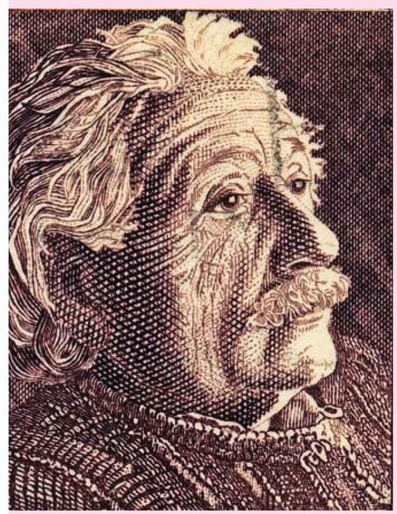
——爱因斯坦
——E. D.伯格曼
我们的数学宇宙——138亿年前
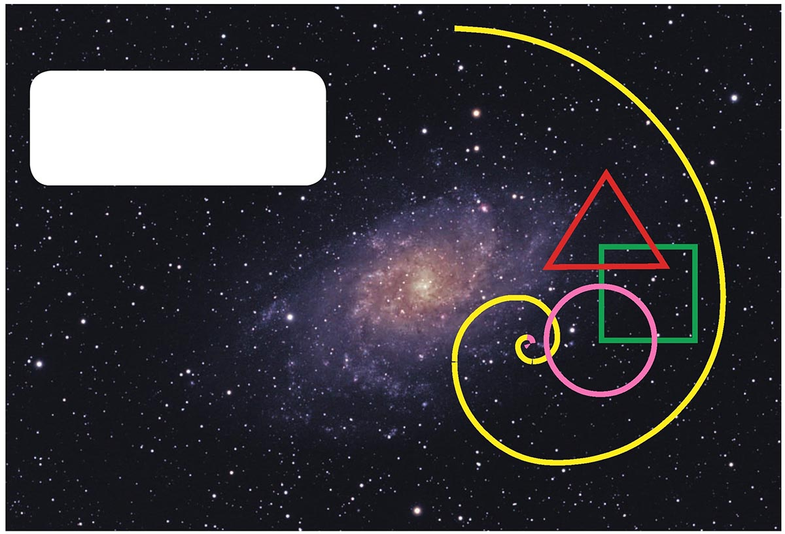
——马克斯·泰格马克，瑞典宇宙学家
我们的宇宙是数学的。自然是一位“建筑大师”，能够将许多基本形状的变化玩得“出神入化”。圆、正方形、三角形与螺线等就像字母表中的一个个字母，若是它们组合起来，就能形成更为复杂的形状，具有全新而独特的属性。
“宇宙是数学的”这一思想可以追溯到古希腊哲学。今天，一些科学家，比如瑞典的一位打破常规的宇宙学家马克斯·泰格马克，就将这样的观点推向了极致。他表示，宇宙不只单纯可以用数学去表达，宇宙本身就是数学！
泰格马克提出的这种让人着迷的“数学宇宙假说”是基于下面的前提：“所有以数学形态存在的结构，同样以物理形态存在。数学模式与公式能够创造出现实。”他说，如果数学本身的定义足够宽泛，那么我们所处的物理世界就是一种抽象的数学结构。或者，正如泰格马克所说：“我们并没有发明任何数学结构，我们只是发现了它们。我们只是发明了描述这些数学结构的符号而已。”
用数学的视角去看待世界的乐趣在于，我们能够看到某些之前看不到的模式。与描述宇宙的其他理论一样，泰格马克的“数学宇宙假说”也遭到了一些科学家、数学家与哲学家的强烈批判。泰格马克对这些批判言论的回应又涉及另一个假说——“外部现实假说”。该假说宣称，存在一个独立于人类存在的外在物理现实，这意味着“数学宇宙假说”和许多平行宇宙的概念的存在（这是一个很容易引起争议的话题）。
驱动飞行——4.1亿年前
地球上第一个会飞的生物是类似于蜻蜓的昆虫，这种昆虫大约是在4.1亿年前开始进化的。即便是在今天，昆虫通过灵活地拍打翅膀来进行飞行的复杂空气动力学结构，依然没有为人们所完全了解。对几厘米长甚至更小的微型飞行器或是纳米飞行器的研发，依然处于初级阶段。
哈佛大学的机器人研究团队已经在这方面抢占了先机。在2007年，研究团队受飞行昆虫的启发，建造了一个昆虫大小的机器飞行体，取名为“机器蜜蜂”。这个机器飞行体能够吊飞，这可以说是长达12年研究的结晶。研究团队成功地研制出了人工合成肌肉，能够让机器飞行体的翅膀每秒拍打120次。
“机器蜜蜂”研究项目的目标是要制造出一群全自动的飞行机器人，运用到研究、救援与人工授粉等领域。机器蜜蜂的能源供给和决策还依赖于连在机身上的细小电缆。要达到真正的自动，研究人员必须把它整合到机身框架里。机器飞行体3厘米长的翼展使之成为世界上能够飞行的最小的昆虫机械装置。
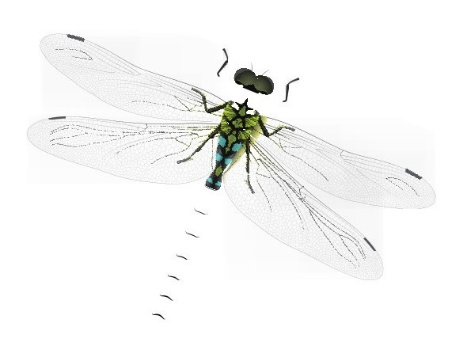
为什么飞机的机翼呈弧形？
飞机机翼的设计方式是为了确保气流穿过飞机上表面的速度比穿越下表面的速度快。正因为此，机翼的上表面做得比下表面更长一些。根据伯努利原理，当机翼上表面承受的压力小于下表面时，就会产生所谓升力——这种力能让飞机在前行的过程中始终保持在空中。当飞机在空中的时候，飞机机身、燃料、乘客以及货物的重量都会对飞机产生强大的下沉拉力，但升力能克服整个飞机的重量，让飞机能够在空中飞行。
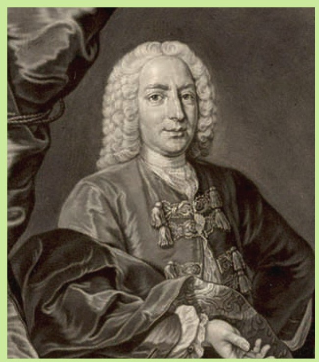
丹尼尔·伯努利（Daniel Ber-noulli，1700—1782）
丹尼尔·伯努利是伯努利家族众多杰出的数学家之一。他以发现伯努利原理闻名于世。
质数与蝉——数百万年前
世界上大约有3500种蝉（拉丁文叫“树蟋蟀”），这是一种分布在世界各地的无害飞行昆虫。
大多数蝉的生命周期是两到五年，但是有些蝉则拥有更长、更奇特的生命周期。
产于北美的周期蝉有着长达13年或17年的生命周期。这引起了生物学家与数学家的极大兴趣，因为13与17都是质数。可见，质数不仅在数学领域扮演着重要的角色，在生命周期上也是如此。
保罗·埃尔德什，这位具有传奇色彩的数学家，在感到绝望的时候，曾大声地说：“人类要想完全了解质数，至少还需要100万年！”周期蝉为什么正好有13年与17年的生命周期，依然找不到具有说服力的解释。
周期蝉以虫蛹的形态在地下存活了13年或是17年。但就像上好了发条一样，时间一到，它们就会建造一个通向地面的“隧道”，然后以数百万的数量出现。
到底是什么让周期蝉在过了这些年之后才出来呢？周期蝉又是怎样了解到质数的呢？这不可能完全是一种巧合。斯蒂芬·杰伊·古尔德就提出一种理论，认为这些周期蝉在地下待这么长的时间，是为了躲避那些短命的猎食者。
然后，周期蝉会褪壳，成为能飞行的昆虫。雄性周期蝉会不停鸣叫，雌性周期蝉则一声不出。它们不吃东西，在短短几周的生命里，它们唯一的目标就是进行交配，以保存物种。
难怪墨西哥有一首优美的歌曲“La Cigarra”，对蝉这种昆虫进行了浪漫的渲染，说它们不停歌唱，直至死亡。它们在两个月内都会相继死亡，留下等待孵化的数百万计的虫卵。这些虫卵将会在地下继续存活13年或17年，直到它们的生命周期再次开始。
周期蝉的生命周期就是自然界无处不存在着数学影子的最佳证明。自然界对质数固有的认知为周期蝉提供了宝贵的生存技能。
进化是一个长期的游戏。周期蝉可以通过选择一个相对较大的质数（比如13与17）来躲避猎食者。比方说，如果蝉的生命周期是17年，而它的猎食者的生命周期是5年，那么它们每隔85年（17×5）才会相遇一次。
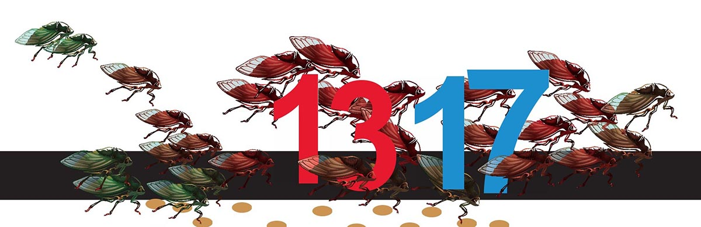
人类的创造性思维是什么时候开始出现的？
早在20多万年前，我们的祖先就已经拥有了创造性思维与革新的想法，这远远超过了我们的预期——根据最新的研究，甚至是在智人出现之前——这实在发人深省。本章将会带大家展开一场探寻世界各地人类创造性思维的旅程。轮子（及其变形）、第一粒骰子、古埃及的棋盘游戏以及毕达哥拉斯定理：人类在过往世纪积累的知识真是让我们惊叹不已。
阿舍利手斧——200万年前
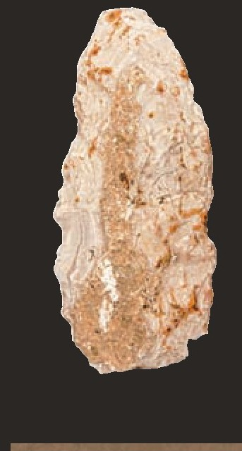
人类的谱系大约出现于600万年前的非洲。在此后近400万年的时间里，我们都没有找到任何关于人类创造性思维的有形记录。
接着，在历史的某个时间点，游牧民族发现了火种，开始将石头制作成切割物品的工具，并且不断加以完善。左图所示的阿舍利手斧，可以追溯到约200万年前。
我们可以说，当早期人类按对称性将石头打磨成有一个点和非常锋利的边缘时，数学、艺术与技术就由此发端。它的确是真正独特的创造。
伊塞伍德骨——公元前一万六千年
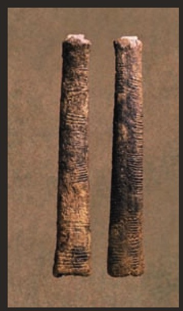
伊塞伍德骨是比利时地理学家让·德·海因兹林（Jean de Heinzelin）在20世纪60年代于伊塞伍德这个地方发现的，现在陈列在比利时布鲁塞尔的自然科学皇家博物馆里。这是一个小型工具，由一个骨头制成的手柄和底部的一片石英组成，上面刻着三排凹口。（参见左图）
伊塞伍德骨可以追溯到公元前16000年。人类关于算术的最早记录可以追溯到公元前35000年，但是伊塞伍德骨刻着的三排凹口则显示出了数学方面的知识——鉴于那个年代的久远，这着实让学界感到无比震惊。因此，伊塞伍德骨被视为人类进行大量计算的最早记录之一。
研究人员起初认为，伊塞伍德骨上的凹口是某种记数的符号，这与世界各地发现的其他物证是相似的。但是，伊塞伍德骨似乎并不单纯是简单的记数工具。让我们认真地观察骨头上的每一排凹口。
在第一排，除了左边最后的那一对凹口之外，其他成对的凹口都是数字乘以2的结果。在第二排，每一对凹口之间相差10。
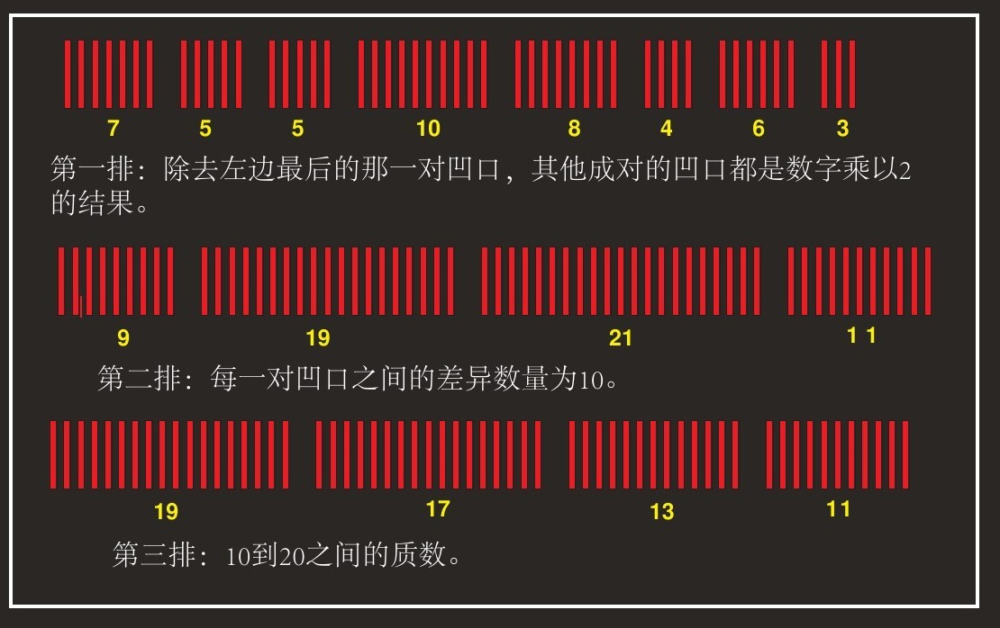
第三排的凹口则是最让人感到震惊的，因为这是用10到20之间的质数按顺序进行的排列。
伊塞伍德骨上的凹口数量是有意对质数进行排列的吗？也许事实并非如此。这更有可能是原始人根据日历而做的一番记录。
但是，假设我们从小于30的范围内随机地选择4个正整数，就会发现这个范围内有10个质数，因此随机选择的四个数都是质数的概率为1/81，这真让人感到无比震惊！
——弗拉基米尔·纳博科夫，小说家
滚动圆与滚子——公元前6000年之前
很多人认为，人类在发明轮子之前，就已经发明了滚子，这样的推理是符合情理的。轮子与滚子之间的差异是巨大的。与轮子不同的是，滚子是独立于它运输的东西之外的。当滚子上方的重物受到外力驱动向前运动时，滚子也会在地面上不断前进。结果就是重物与滚子都能够一起前进。
世界各地的早期人类文明都各自发现了运用滚子能极大地帮助重物的运输。要是没有这样的发明，建造古埃及金字塔、宫殿或巨型石碑，都将在理论上变得不可能。
两个滚子的周长都是1米。如果滚子完整地转动一圈，重物能前进多远呢？
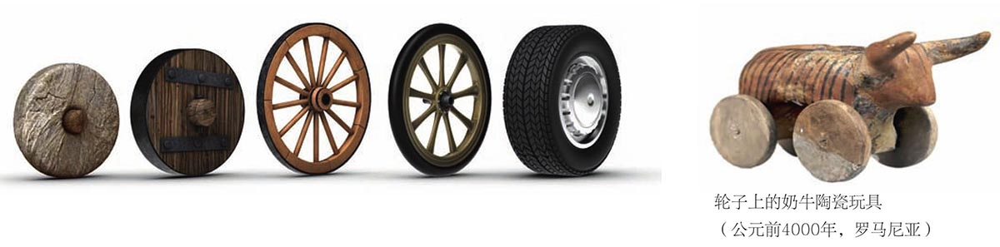
轮子与旋转运动——公元前6000年
轮子可能是人类历史上最重要的机械发明。
亚里士多德设想，所有天体的运行都是完美对称的，即只能沿着圆形来运转。亚里士多德的这一“学说”在长达2000多年的时间内都被世人不假思索地接受着，甚至连哥白尼也同意这一观点。
轮子，或是更抽象地说，旋转工具的引入，是人类历史上具有重大影响的事件。
人类耗费了数千年时间才想出了这种前所未有的运动形式，并且运用到现实当中。发明轮子，这需要人类具有抽象的思维能力，能从物体本身想到它背后的理念，从现象中提炼出理论。在这个问题解决之后，轮子并没有什么伟大的改进，正如人类许多其他伟大发明一样。在美索不达米亚的乌城发现的轮子，与20世纪制造的充气轮胎，其实只存在着配件上的差异而已。
迷宫
迷宫是一种古老的建筑。人类有史以来最早有记录的迷宫之一是古埃及迷宫（公元前1900年）。古希腊旅行家兼作家希罗多德在公元前500年就游览过古埃及的迷宫，并写道：“埃及金字塔的雄伟壮观根本无法用言语去描述，但是迷宫的神奇与雄伟则超越了金字塔。”这曾让人心驰神往、无比震撼的建筑现在已荡然无存。
据说，人类历史上第一座迷宫是代达罗斯建造的，是给克里特国王米诺斯的半牛半人的怪物米诺陶诺斯修建的住所。忒修斯用一个金线球，终于找到了走出迷宫的路径。
从数学的角度去看，一个迷宫就是一个拓扑学范畴的问题。要想快速走出迷宫，我们可以在纸上将所有“死路”全部遮住，那么唯一正确的路径就会自然出现，从而迅速得到解答。但是，如果你手中没有迷宫的地图，而你又置身其中的话，那么你可以将手抵住右边（或是左边）的墙一路走下去，这样你最终必然能够走到出口，虽然这可能不是最快捷的路径。这种方法不能用于终点在迷宫内部且有封闭回路的情况。那些没有封闭回路的迷宫通常被称为“单连通”的迷宫，这些迷宫没有分离的墙壁。而那些带有分离墙壁的迷宫则必然包含封闭回路，这些就被称为“多连通”的迷宫。
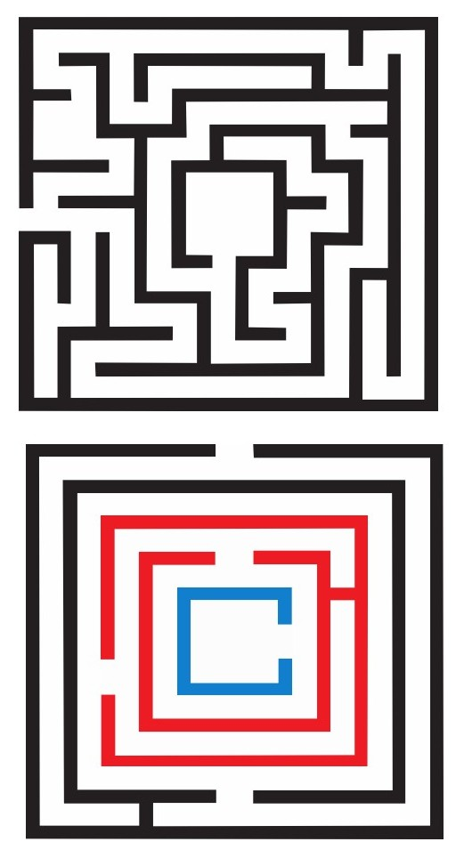
上图：单连通的迷宫；下图：多连通的迷宫。
阿德里安·菲舍尔的迷宫
阿德里安·菲舍尔是国际公认的著名迷宫设计师，他在世界30个国家建了500多个大型的迷宫建筑。
在他英国多塞特的家里，阿德里安与他的妻子共同创造了世界上半数的神奇镜子迷宫以及世界上第一个麦田玉米地迷宫、水上迷宫，并在《吉尼斯世界纪录》中拥有多项世界纪录。
阿德里安还是400多个谜题的创作者，这些谜题在世界各国的主流杂志与电视上发表。同时，他创作了十几本关于迷宫的优秀专业书籍。
阿德里安·菲舍尔
阿德里安·菲舍尔创造的镜子迷宫
杜登尼的迷宫
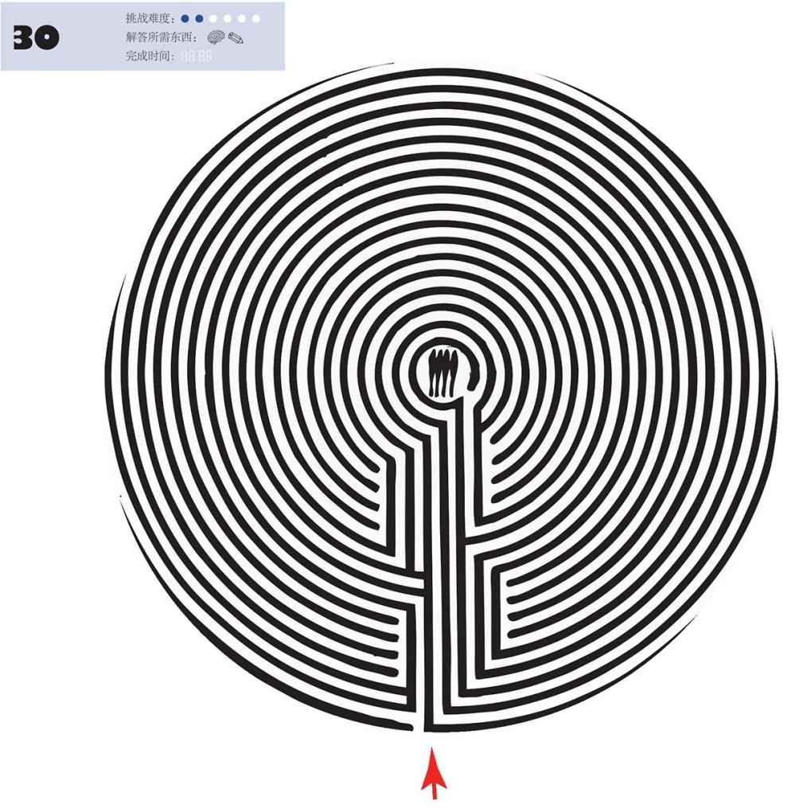
亨利·欧内斯特·杜登尼（1857—1930），英国作家与数学家，擅长逻辑谜题与数学游戏。他是英国最出色的谜题开发者之一。
他用笔名“斯芬克斯”向报纸与杂志寄去谜题，想提升大众的参与度。
他早年的许多作品是与美国的谜题专家山姆·劳埃德一起合作完成的。1890年，他们共同在英国一家名为Tit-Bits的周刊上发表了一系列文章。
后来他们的合作中止了，因为杜登尼指责劳埃德剽窃他的谜题，并以他一个人的名字发表出来。
从本质来说，杜登尼设计出来的迷宫与6000多年前的人类创造出的迷宫没有什么大的区别，但他的迷宫却是相当有难度的。你能解答这个迷宫问题吗？杜登尼找到了600种方法，这600种方法中没有一条路线会走两次。
骰子——公元前5000年
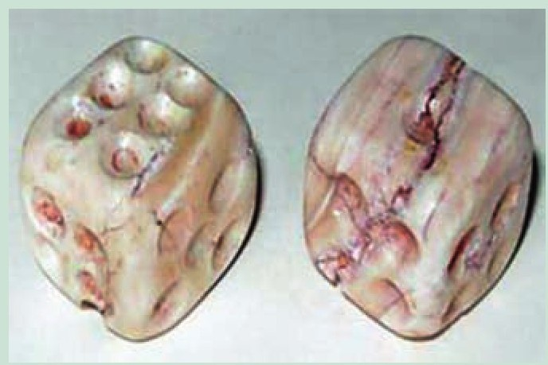
在有历史记载以前，亚洲的人们就一直在使用骰子。出土的最早骰子是在今伊朗东南部“焚毁之城”的一处考古遗址发现的，在一套已有5000多年历史的西洋双陆棋里。《圣经》里有多处关于“抽签”的描述，这表明在大卫王统治时期，这种赌博游戏就已经相当普遍。有一种骨棋是当时的女性与小孩经常玩的一种游戏。这是一种骰子游戏衍生出来的游戏形态，骨头的四面刻着不同的数值，类似于现在人们玩的骰子。在那个时代，用两个或三个骰子进行赌博，是希腊上层阶级的流行娱乐，是会议期间的常见消遣。
西洋双陆棋——公元前3000年
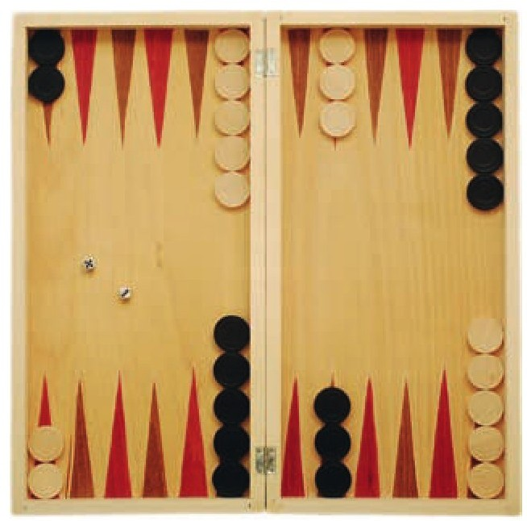
西洋双陆棋是最古老的双人对战棋盘游戏之一。根据两个骰子摇出来的数字去移动棋子，需要将对方所有的棋子都从棋盘上移走才能获胜。西洋双陆棋衍生出了许多种玩法，不过这些玩法大多都很接近。
虽然赢得游戏有运气的成分，但策略同样重要。每摇出一次骰子，游戏选手就必须从多种移动棋子的方式中进行选择，并预测对手的棋路。在游戏过程中，选手必须全神贯注方有机会胜出。更关键的是，选手可以提升游戏的风险，用一步棋让对手弃权。
《游戏之书》（Libro de Los Juegos）
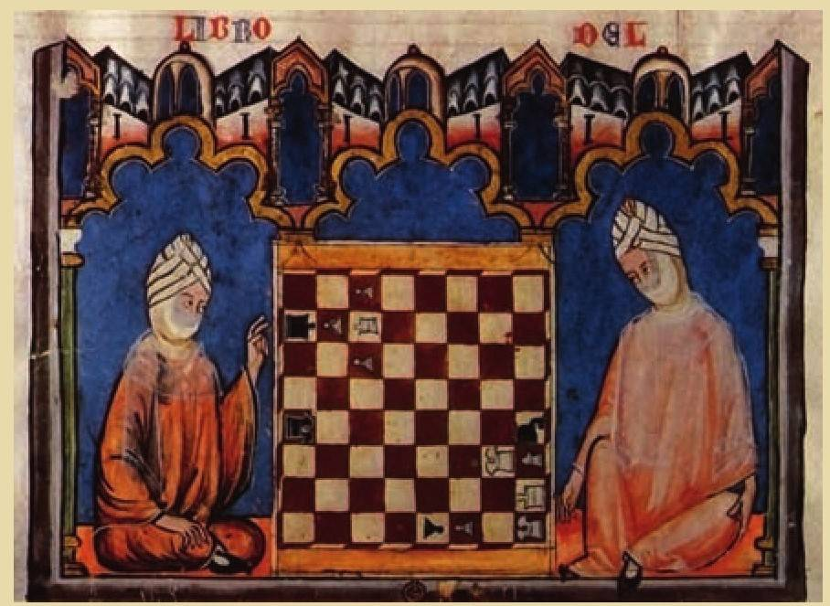
1257年，阿方索十世（1221—1284）继承了他父亲的王位，继任卡斯蒂利亚国王，统治加利西亚里昂地区。在统治期间，他在许多领域做了大量的工作，其中就包括编撰《游戏之书》。这本书是他于1283年在托莱多地区自己的工作室中完成的。他是阿方索留给后世的一份精彩的文化遗产，该书用97页羊皮纸写成，带有许多彩色插图，包含150幅微缩画。书中阐述了三种游戏：一种是技巧型的，比如国际象棋；一种是运气型的，比如骰子；最后一种则是结合技巧和运气的，比如西洋双陆棋。本书包含人类最早对这些游戏的描述，因此对研究棋盘游戏的历史是至关重要的。现在唯一已知现存的手稿收藏于西班牙首都马德里圣洛伦佐-埃斯科里亚尔修道院图书馆里。
掷骰子游戏、谜题与塞尼特棋——公元前3000年
掷骰子游戏是一种将骰子视为游戏唯一或核心因素的游戏，而骰子通常扮演着“随机装置”的作用。
考古学证据显示，古埃及的法老会与他的嫔妃们一起玩掷骰子游戏，比如塞尼特棋。考古学家在对公元前2000年的古埃及坟墓进行考古时发现，有些骰子的历史可以追溯到公元前6000年。塞尼特棋是人类最古老的一种棋盘游戏，足以与西洋双陆棋相媲美。塞尼特棋需要两位对战的选手，其本质是一场赛跑。棋盘上有30个方格，分为3排，每一排有10个方格，每位选手可以移动自己的棋子。游戏的目的就是率先将5个棋子都移出棋盘。选手们可以阻挡对手的棋子，也可以吃子，将它们逼回起始位置或棋盘的中间位置。掷四根棍子，或两个骨骰来决定选手每一次棋子的移动。塞尼特棋不仅是靠运气的游戏，还需要技巧和策略。
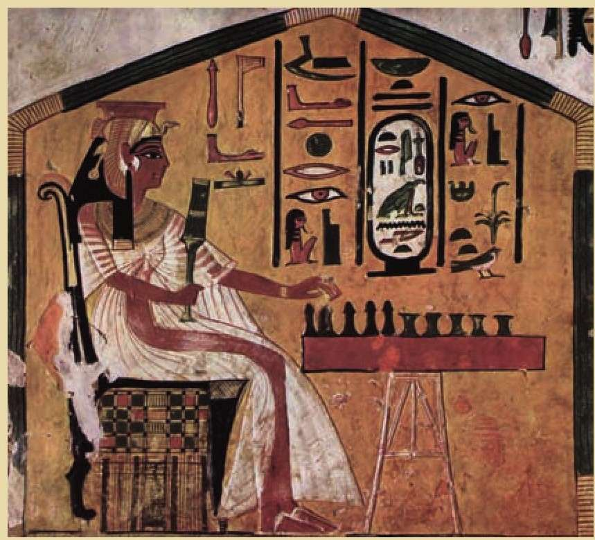
奈菲尔塔利王后正在玩塞尼特棋。（奈菲尔塔利陵墓里的壁画，公元前1279—前1213年）
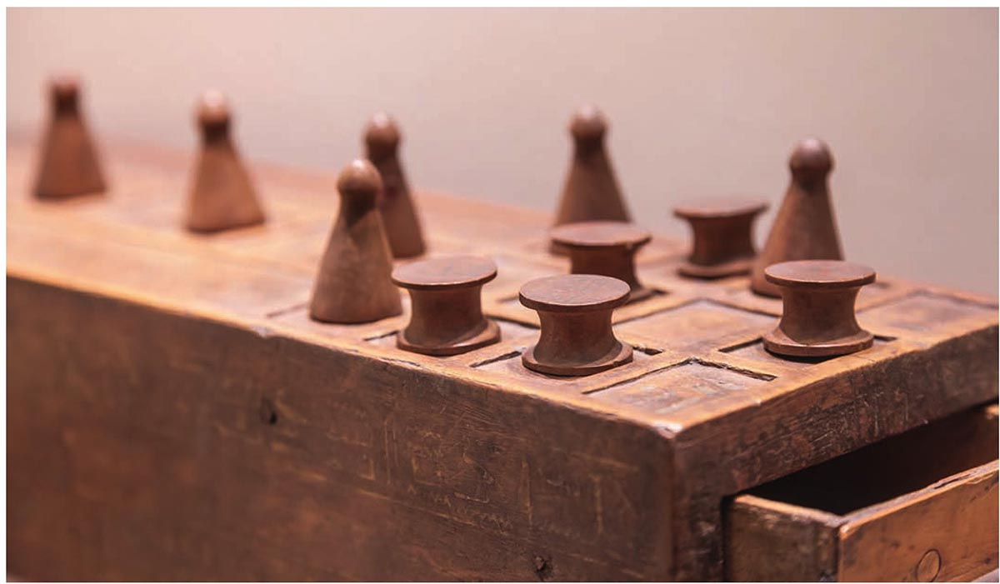
骰子问题——一对骰子
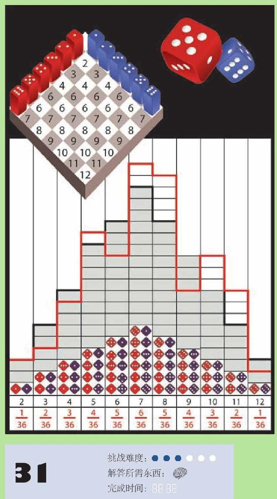
很多游戏都会用到一对骰子，目的就是为了得到一个需要的总数。
1854年，路易斯·巴斯德就曾说：“机会总是青睐有准备的大脑。”这句话说得没错。在投掷一对骰子的时候，要计算得到某一个特定的总数的概率，很多人都会感到茫然无措。即便是著名的数学家与哲学家戈特弗里德·莱布尼茨都认为，用一对骰子掷出总数11与12的概率是一样的，因为他认为只有一种方式能分别掷出总数11与12（即数字5与6相加才能得到总数11，而只有两个数字6相加才能得到总数12）。
那么，我们就要提出两个问题：
1.莱布尼茨的推论存在什么问题呢？
2.投掷一对骰子，最终出现的总数是偶数的概率是多少呢？总数为偶数与奇数的概率是完全一样的吗？
我们一开始就知道的是，一对骰子掷出来的总数是在数字2与数字12之间的。在左边的图表里，掷出来的骰子的总数通过视觉的方式呈现出来了。这些结果的分布曲线近似于著名的“正态分布”或者“高斯曲线”。
我们知道，当某个事件出现的概率是50%的时候，那么平均来说，这件事有一半的可能会发生。但是，很少有人会意识到，只有在事件发生非常多次之后，平均数才会接近50%。
事件发生的数量要有多大，才能让我们相信概率的预测呢？你可以自己去做一些小实验，观察一下得出来的结果。灰色的图表显示了在投掷106次一对骰子之后所出现的结果。红色的图表则显示了作者在进行该实验时所得出来的结果。当然，你也可以自己去尝试一番。你可能会惊讶地发现，即便事件发生的次数相对较少，都能得出与理论值极为接近的数值。
三颗骰子
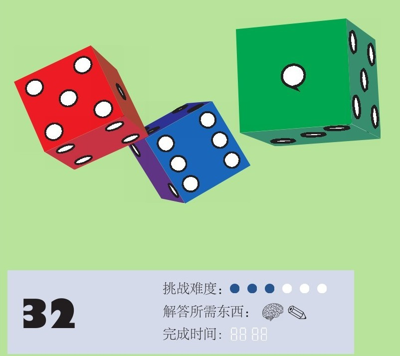
你可以用多少种方法去投掷三颗骰子呢？投掷三颗骰子呈现出来的点数加起来的数值在3到18之间。你能计算出投掷三颗骰子得到总数7与总数10的概率吗？
多个世纪以来，人们认为投掷三颗骰子只有56种可能的方式。人们没有认识到组合与排列之间的不同。他们只计算了组合的方式，而要想对每次投掷骰子的概率进行精确的估计，需要我们将排列的结果也计算在内。直到1250年，理查德·德·富尼瓦尔才第一次阐述了投掷三颗骰子的方法真正有多少种，从而计算出了正确的概率。[shu籍 分.享 V信jnztxy]
投掷一颗骰子
你的朋友投掷了一颗骰子，接着，你也投掷了同一颗骰子，那么问题来了，你投掷出的骰子数比你朋友大的概率是多少呢？
用骰子投掷出一个“6”
如果你投一颗骰子6次，那么你投掷出一个6的概率是多少呢？
投掷六次骰子
如果你投一颗骰子6次，那么1～6各出现一次的概率是多少呢？
西洋棋（跳棋）——公元前3000年
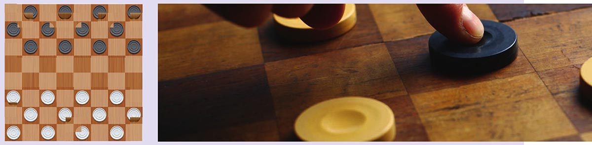
棋盘游戏在北美地区称为西洋棋，在欧洲地区称为跳棋，是已知最古老的游戏之一。最古老的棋盘游戏是在今天伊拉克美索不达米亚平原上的乌城出土的，研究人员通过碳同位素检测，发现这是公元前3000年的物品。
在公元前1400年的古埃及也有类似的游戏，被称为“中东跳棋”，采用5×5的棋盘。
1100年，一位具有创造性思维的法国人对该游戏进行了改良，使之能够在棋盘上进行，将对战双方可用的棋子增加到12枚，并且将这种游戏称为“女性的游戏”，因为当时的人们认为这是一种女性社交游戏。
今天，电脑已经能够打败人类最优秀的棋手，而西洋棋仍像过往那样受欢迎。它能对人的逻辑与思维能力提供良好的训练。
棋盘游戏是一种适合两人对战的游戏，每一位选手都有12枚棋子，这些棋子被摆在棋盘的黑色方格里。而在国际跳棋游戏里，选手们可以拥有20枚棋子，在10x10的棋盘上进行对战。
游戏的目标就是“消灭”对方的每一个棋子，或让对方的棋子处于一种无法做出“有效移动”的状态。
一开始，棋子只能斜着向前移动。主要有两种移动方式，一种是吃子，一种则是走子。走子就是简单地沿着对角从一个方格进入邻近的方格。吃子则只有一方能够“跳”过对方的棋子时才行。当然，也是要对角吃，而且只有在棋子后方是空位的时候才行。
在吃子时，一枚棋子可以连走几步跳棋。在一次跳棋之后，若选手还能跳，他就可以继续跳。这意味着棋手可以连续走几步跳棋，并且在连续跳棋的过程中吃掉对方的多枚棋子。请注意，当一位选手能够吃子时，他就必须这样做。
当一枚棋子到达对手一边的棋盘最后一排（这就是所谓的“将”位）时，它就成为“王”。“王”这枚棋子有一定的特权，可以后退，也可以沿着两个方向来回移动（在连续跳棋的时候）。
这里还要谈论一下玩这种游戏的策略。第一，你们首先要记住运用“强制吃子规则”将你的对手调动到一个他必须放弃两枚棋子才能换取你一枚棋子的境地。通常来说，多出一枚棋子的优势足以改变棋局的走势。第二，你要始终封锁住通向你的“王”位上的道路，不让对手有机可乘。“王”棋会让其他棋子变得非常危险。
通常来说，把对手的棋子全吃掉才算赢；但有时，当对方无法再做出任何移动时，你也算赢。
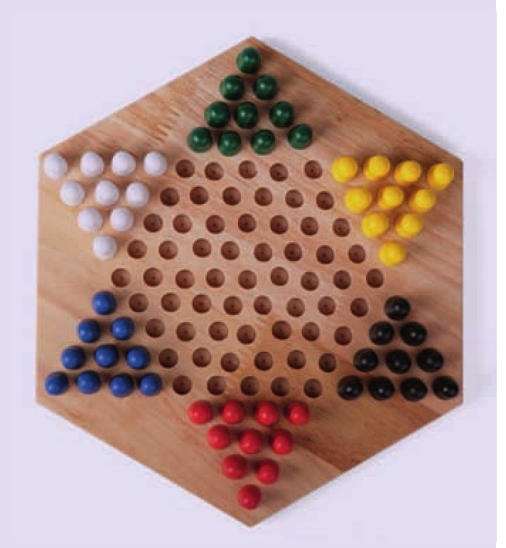
中国跳棋可以追溯到1892年，是一种竞赛型棋盘游戏。它发明于德国，并不是经典跳棋的变种，而是由更古老的美国哈尔马棋演变而来的。
被破解的棋盘游戏
在2007年，乔纳森·谢弗与他的同事研发了一个名为“切努克”的电脑程序，证明了如果棋下得完美的话，西洋棋会是没有输赢的游戏。
与井字游戏一样，当双方选手都没有做出任何错误的走位，那么最终就会是平局。切努克在与世界冠军马里昂·廷斯利进行对决时，就取得了一系列的平局。
马戏团小丑与棋盘游戏
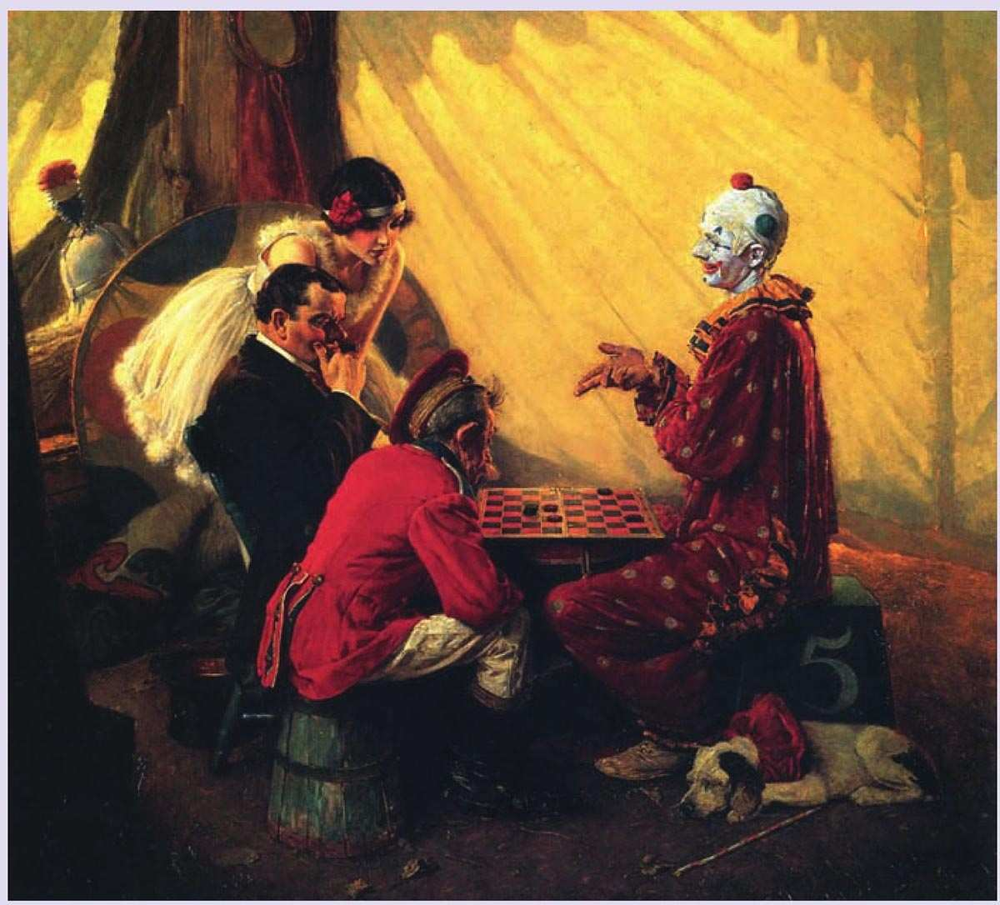
棋盘游戏引起了许多艺术家的兴趣，这幅由诺曼·罗克韦尔绘制的令人赏心悦目的画作展现了一位马戏团小丑与马戏团领班及其他马戏表演者玩棋盘游戏的画面。
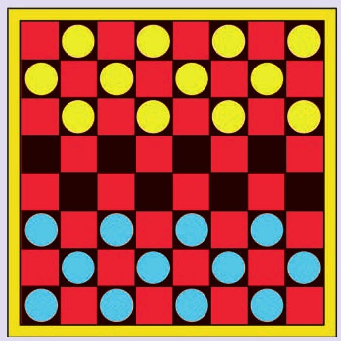
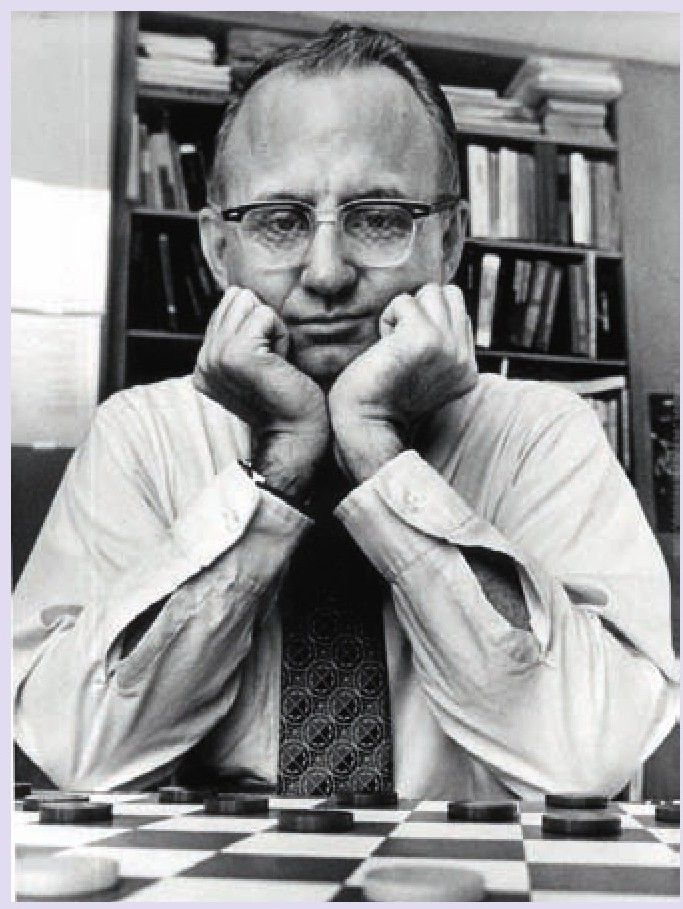
国际象棋大师马里昂·廷斯利：2007年之后，他不再是唯一的国际象棋冠军了。
齿轮的迷人历史
中国的指南车
齿轮是人类创造出来的最古老的机械之一，它们的起源可以追溯到公元前2700年中国制造的指南车——这是一种两轮车，上面有一个指着南方的装置。不管往哪个方向走，这个装置始终都会指向南方。该车装有齿轮连接的轮子，可以始终让该装置指向南方。
关于齿轮最早的历史文献描述是公元前4世纪亚里士多德记录的。他曾这样写道：“当一个齿轮驱动着另一个齿轮转动的时候，旋转的方向是相反的。”在公元前3世纪，很多希腊发明家将齿轮运用到了水轮与钟表装置上。人类在19世纪才首次运用成型刀具与旋转刀片。1835年，英国发明家惠特沃思申请了第一个齿轮机的专利。
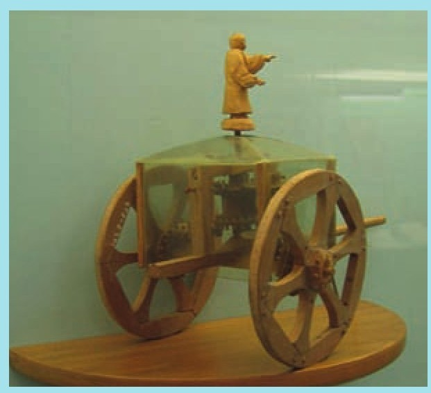
安提凯希拉装置
安提凯希拉装置是一种古代的类计算机，用于计算天体的运动与位置，看起来像一个古典时钟。这个装置是1900到1901年间在安提凯希拉沉船里找到的，但其重要性以及复杂性在一个世纪之后才得到充分的认知。新的研究结果表明，这个古代的机械装置是在公元前2世纪制造出来的。
这个不可思议的成就充分体现了我们的祖先所具有的杰出智慧。如此错综复杂的机械，此后一千年都没有再出现，直到西欧一些国家开始制造天文钟。
卡迪夫大学的迈克尔·埃德蒙兹教授在2006年就对机械的历史进行了一番研究，他表示：“安提凯希拉岛出土的这个机械装置是无与伦比的，独一无二的。这个装置的设计是充满美感的，其天文学原理也是完全正确的，让人目瞪口呆。无论这个装置是谁发明的，他必定是极为用心与谨慎的……就其历史价值与稀缺性而言，我认为这个装置比达·芬奇的《蒙娜丽莎》更加重要。”（2006年11月30日所说）
安提凯希拉装置现存于希腊首都雅典的国家考古博物馆，普赖斯教授也捐献了一笔资金，用于重建。
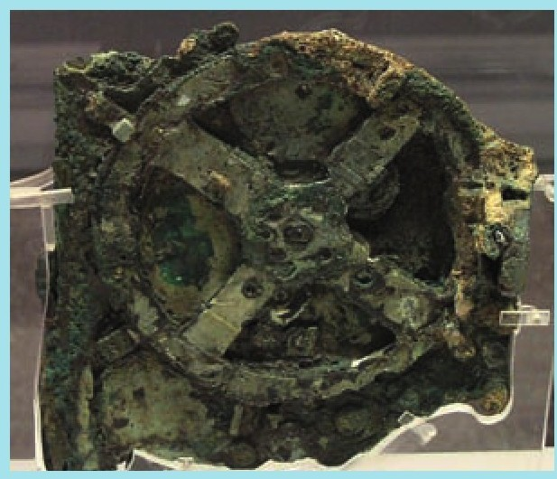
安提凯希拉齿轮的运转原理
美国哲学学会的普赖斯教授在1974年发现了安提凯希拉齿轮的运转原理，让人们可以对古代科技发展重新进行一个完整的审视。这个系统包括32个齿轮，能够准确再现在固定星座背景下的太阳与月亮的运动，给出它们的相对位置以及月亮的状态。所以这个装置出土的时候，很多人都怀疑这是后世人埋在地下的，或是外星人创造出来的。
这个齿轮装置的草图在1971年之后才被绘制出来。在普赖斯教授的发起之下，研究人员用伽马射线对该装置的残余部分进行了检查，因为齿轮已经被结实的石灰块给覆盖了。
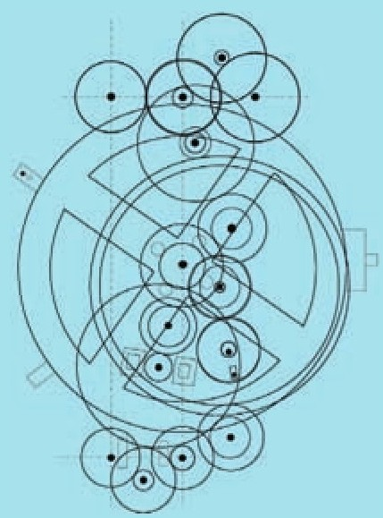
齿轮方形
你要让上面较小的齿轮转动多少次，才能形成图中间的黑色正方形呢？小齿轮有20个齿，大齿轮有30个齿。
上升还是下降？
如图所示，如果以逆时针方向转动底部红色的齿轮，那么四个有标记的砝码会出现什么情况呢？哪一个砝码会上升，哪一个砝码会下降呢？
陀螺——公元前3500年
旋转运动的发现令世界各地的人们各自独立地发明了陀螺。在乌城（位于今天的伊拉克境内）出土的泥土做的陀螺可以追溯到公元前3500年。
陀螺（又称为旋转陀螺）是一种能够沿着轴心转动的玩具，立在一个点上保持平衡。最简单的方式是用手指转动陀螺。复杂一些的陀螺则是通过绳索或棍子的抽动，使陀螺能够沿着轴心来转动。
陀螺的运转基于复杂的机械原理，在其发明了数千年之后人们才能够加以解释。
陀螺效应让蛇螺立起来并旋转。陀螺首先会摇晃一阵，然后陀螺的尖端就会与它所在的面相互作用，使陀螺处于笔直的状态。在维持一段笔直的状态之后，角动量和陀螺效应逐渐减弱，最后让陀螺在某个瞬间轰然倒下。
多个世纪以来，出现过无数种陀螺的设计与变化。其中有一种有趣的陀螺被称为翻身陀螺。当它以很快的角速度旋转时，它的手柄就会逐渐向下倾斜，然后突然将陀螺的躯干部分抬离地面。随着陀螺转动的速度越来越慢，它会慢慢失去稳定，最后倒下来。
乍一看，翻身陀螺的翻转，会让人们误以为陀螺得到了额外的能量。这是因为陀螺的翻转会让陀螺的重心升高，导致势能增加。这实际上是由表面摩擦的扭矩造成的，它会降低陀螺的动能。可见，在这个过程中，陀螺的总能量其实并没有增加。
溜溜球
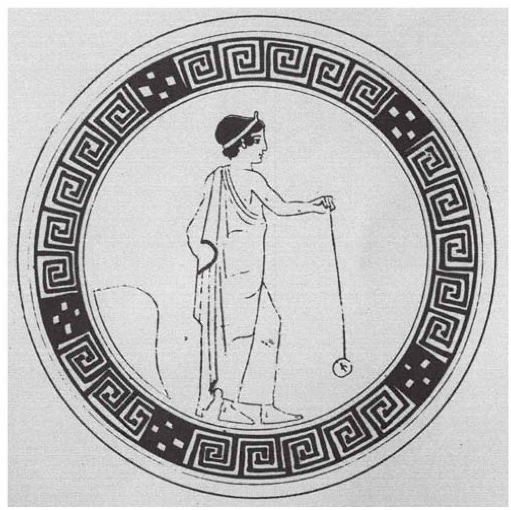
现存最早的溜溜球可以追溯到公元前5世纪，这个溜溜球呈现在一个陶制的圆盘上。
这个时期的一个希腊花瓶上画着一个正在玩溜溜球的男孩。当时的历史记录显示，很多玩具是用木头、金属，或陶土制成的。陶土制成的溜溜球是男孩在成人礼上献给众神的，而金属和木制的溜溜球是用来玩的。
古埃及三角形——公元前2000年
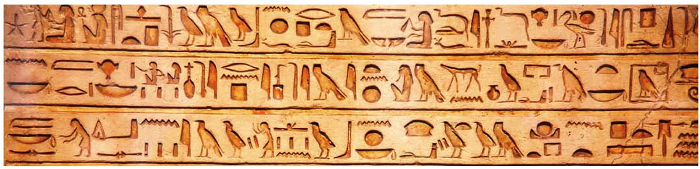
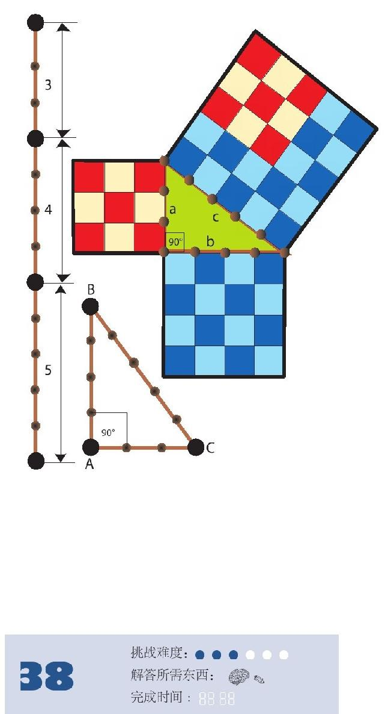
公元前2000年，古埃及人已经制定了一套原始的数字系统，并对三角形、金字塔等形状形成了一些几何学方面的概念。一些未经证实的历史资料记录了古埃及人运用创新的方法创造出了直角。古埃及的测量人员在一根长12个单位的绳圈上打结，将绳圈分为12等份。他们用这样的绳圈围成一个三条边的长度之比为3：4：5、面积为6个平方单位的直角三角形。这个三角形就叫作古埃及三角形。古埃及人就是用这种最简单的方法证明了毕达哥拉斯定理（又称勾股定理，下同）。他们在A点与B点之间固定绳索，然后将剩下的绳索拉直到C点，最终得出来就是一个直角。下一页的内容将会用视觉的方式验证古埃及三角形符合毕达哥拉斯定理。你也可以用一根类似的绳子去创造其他形状。
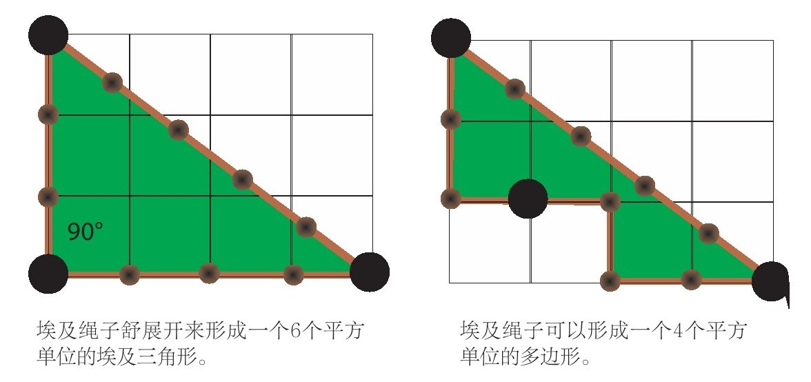
1.你能将这样一根绳索拉成一个多边形，并使这个多边形的面积为4个平方单位吗？其中一种解答方法见上图。你能发现其他形状吗？
2.将这条绳子的每两个点之间都拉直的话，围成的图形最大面积是多少？
毕达哥拉斯三元数组——公元前2000年
数千年前的古巴比伦人就已经明白了如何运用毕达哥拉斯三元数组。乔治·普林顿（George Plimpton）发现了一块刻着三元数组的泥板，其中就包括了古埃及三角形。
毕达哥拉斯三元数组由三个正整数a、b、c组成，即a 2+b 2=c 2。
这样的三元数组通常会写成（a, b，c）。最小的毕达哥拉斯三元数组就是（3，4，5），这也是古埃及三角形所得出来的数值（参见上一页）。
古埃及三角形的三条边的长度都是正整数（3，4，5）。毕达哥拉斯学派认为，每个直角三角形三条边的长度都是正整数，他们这样的想法是非常错误的。你能找到一个最小的直角三角形每条边的长度都不是正整数的吗？
有一个简单的公式（欧几里得公式）也能够给出毕达哥拉斯三元数组。
假设有一对正整数m与n，其中m要大于n，那么这个公式就可以用正整数a, b，c写成这样子：
a=m 2-n 2；b=2mn；c=m 2+n 2，从而形成一个毕达哥拉斯三元数组。
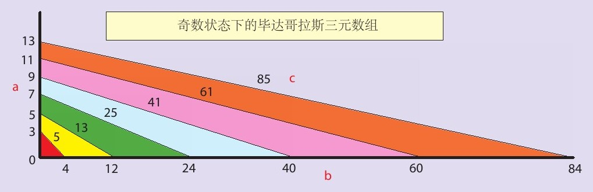
当a边是连续的奇数时，所能构成的六组毕达哥拉斯三元数组。
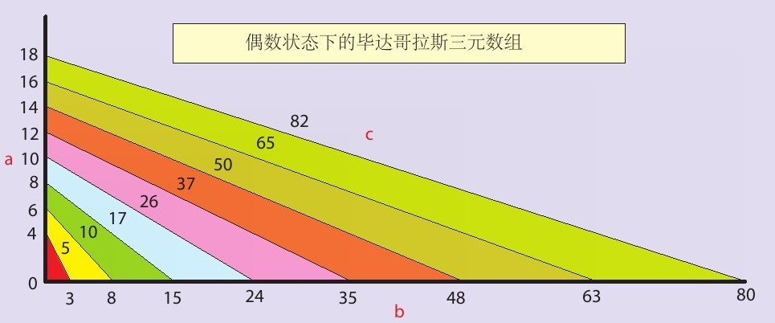
在a边是偶数的情况下，存在无数个毕达哥拉斯三元数组。每一个偶数都可以成为毕达哥拉斯三元数组的a边。上图只给出了前面八组正整数状态下的毕达哥拉斯三元数组。
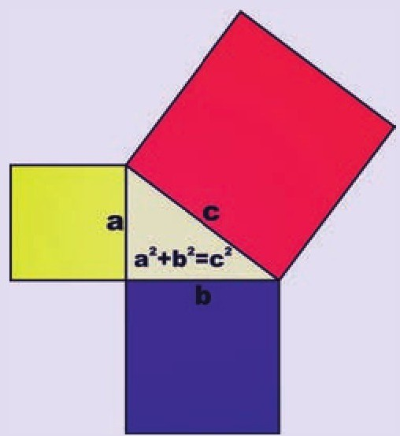
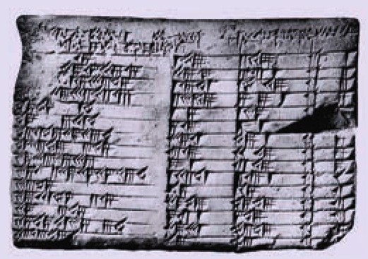
著名的普林顿322号古巴比伦楔形平板，刻于公元前1800年左右，上面列出了最早的15组毕达哥拉斯三元数组。
费马大定理
著名的费马大定理就与三元数组相关。费马（1601—1665）认为：a n+b n=c n对于非零整数a, b，c是无解的，除非n=2，这就回归到了我们熟悉的毕达哥拉斯定理。1637年，费马就在一本书的边角处写下了一句让接下来四百多年的数学家为之头疼的著名句子：“我找到了一个能够完美证明这个命题的方法，但这个边角处太小了，写不下。”
这就是数学史上著名的费马猜想。这一猜想直到1994年才得到解答。数学家安德鲁·怀尔斯在他的那个“我发现了！”的灵感时刻，终于证明了这个猜想。
神圣几何学——公元前1800年
神圣几何学是建立在下述理论基础上的一门古老科学：即所有东西都由能量模式创造和统一，神圣几何学对这种创造的能量是如何组织起来的进行了解释：所有的自然模式、运动和发展，不管大小，必定会符合一种或多种几何形状。
神圣几何学的概念在印度冥想图中得到了极具美感的视觉化呈现。冥想图在瑜伽中相当于佛教所使用的曼陀罗。这是一种用来平衡心智与专注于灵性概念的几何图案。一些传统观点认为，这样的冥想图具有神奇的力量。
印度冥想图可以追溯到大约公元前1800年。它是由围绕着一个中心点的9个连锁三角形组成的。这9个三角形有着大小不同的形状，相互交叉。中间位置就是一个力量点，一个看不见的焦点，所有图案乃至整个宇宙都由此伸展出来。这9个三角形交织在一起，形成了一个43个较小的三角形的网络，象征着宇宙或造物之始。
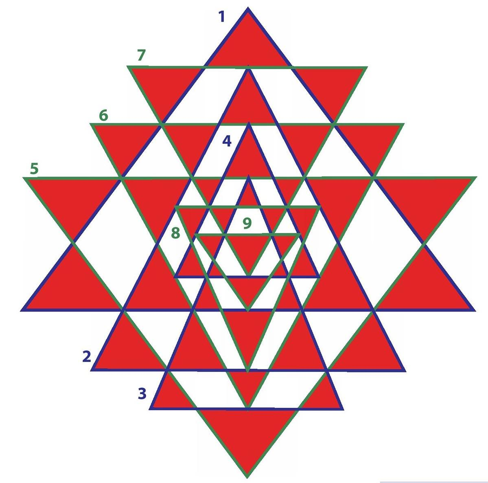
印度冥想图
上面的这幅印度冥想图由43个红色三角形组成。要消除图中所有红色三角形，需要从9个蓝框和绿框的三角形里移除多少个呢？
房子—猫—老鼠—小麦
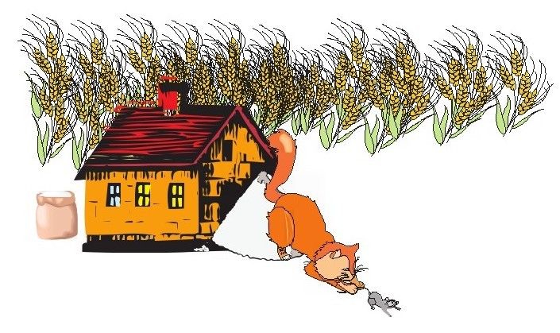
七间房子每间有七只猫，每只猫能够吃掉七只老鼠，每只老鼠能够吃掉七斗小麦，每斗小麦都能磨成七个单位重量的面粉。按照这样的逻辑推理，每只猫能够帮助保存多少单位重量的面粉呢？
阿默士谜题——公元前1650年
莱因德纸草书（Rhind papyrus）有时又被称为阿默士纸草书。这是一卷长达6米的手卷，现存于大英博物馆。这是人类发现的最早关于数学的文献之一，也是我们了解古埃及数学的主要资料。
莱因德纸草书包含84个数学问题解答，包括算术、面积计算以及“线性方程”的解法。莱因德纸草书还是一份极具说服力的历史文件，表明了早期的埃及人在数学方面的研究有多少是基于谜题的。
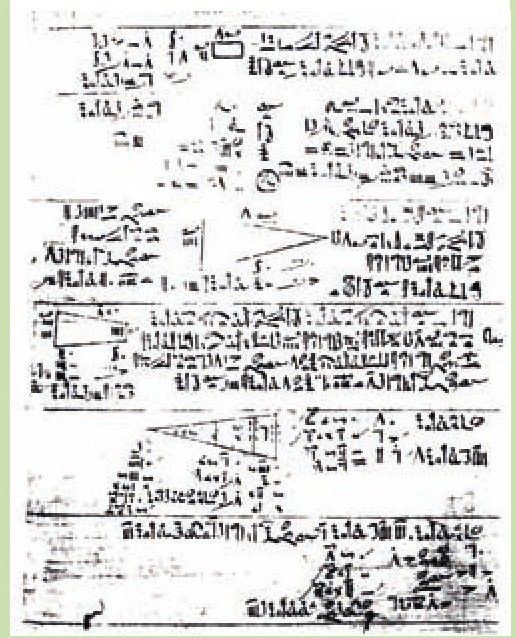
如图所示的是这份手卷的第79个问题，这就是经典的“房子—猫—老鼠—小麦”谜题。这个谜题表明古埃及人对几何级数已经有了一定的概念，并且可能是最早的与组合学结合的谜题之一。（最早的一个应该是中国的《易经》）
圣·艾夫斯谜题——1202年
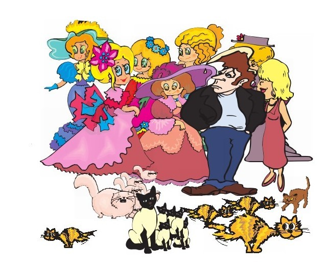
阿默士的谜题衍生出了很多变种，其中就包括圣·艾夫斯谜题。1202年斐波那契出版了一本名为《算术书》的书。我们不知道那时候他是如何接触到莱因德纸草书的。他提出了这样一个问题：“在我前往圣·艾夫斯的路上，我遇到了一个男人，他有7个妻子，每个妻子都有7个包，每个包里都装有7只猫，每只猫都有7个罐头。一共有多少东西前往圣·艾夫斯呢？”
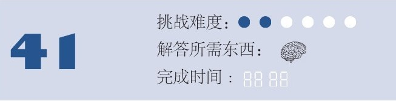
组合学
组合学是数学的一个分支，专门研究各种元素的排列组合方式可能形成的复杂系统。简单来说，这门学科试图在不进行实际计数的情况下回答“有多少”的问题。具体来说，组合学研究的是满足特定条件的对象的有限集合。计数组合学主要对满足特定条件的对象进行计数，极值组合学重在研究最佳对象是否存在，代数组合学则研究这些对象所包含的代数结构。
井字棋——公元前1400年
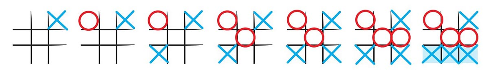
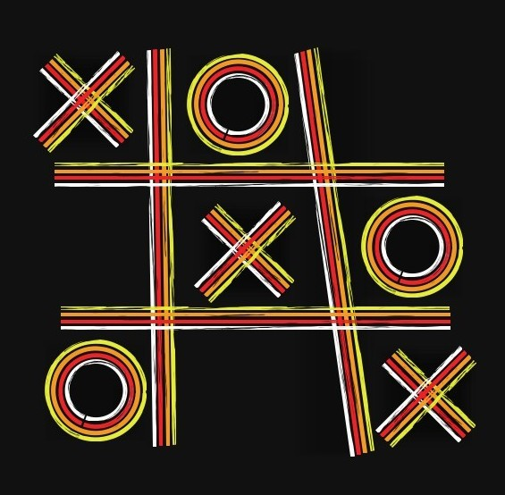
井字棋起源于古埃及，它可能是人类历史上最早的使用纸与笔，且适合两个人对垒的游戏。双方选手使用X与O这样的符号在3×3的方形网格里做记号。成功让自己的三个标记以垂直、水平或对角的方式形成一条线的人，就是这个游戏的胜利者。
选手们很快就发现，双方选手都表现最好时会出现平局。电脑程序在与人类进行对战的时候，表现得极为完美。电脑程序能够计算出765种完全不同的游戏走位，还能计算出26830种可能的游戏局面。对于一个简单的游戏来说，这是一个相当大的数字了。
井字棋看似很简单，但却需要选手具有缜密的分析能力，来决定一些基本的组合形式，比如算出各种可能的棋局以及棋子可能出现的位置。
古罗马帝国时期，这种游戏有一个早期衍生玩法，每一位选手只能有三个记号，因此他们在游戏的过程中必须将记号在空白位置上移动。这种形式的游戏可能是人类历史上最早的滑块类游戏。
这种游戏与画圈打叉游戏很相近，这是这个游戏的英国名字，出现于1864年。而在美国，这种游戏在1952年被重新命名为井字棋。
九宫格棋——公元前1400年
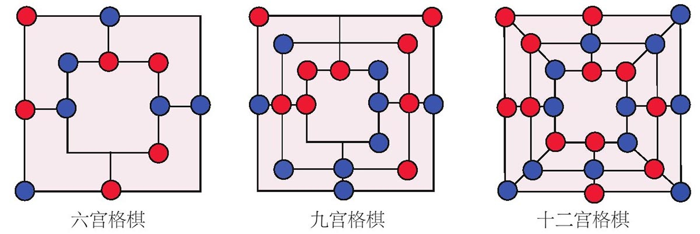
九宫格棋是一种双人对战的策略性棋盘游戏，出现在公元前1400年的古埃及。这种游戏还被称为“密尔斯”。
每位选手都有9枚棋子，或者说9个“人头”，在棋盘的24个点位上移动。游戏的目的就是要将对手的棋子变得少于3枚，或是让对手无法继续做出有效的移动。
一开始，棋盘上是没有棋子的，选手们需要轮番在棋盘的空位置摆放棋子。如果一位选手能够让3枚棋子在棋盘上的水平或垂直连线形成一条直线，那么他就获得了一个“密尔斯”，可以将对方的1枚棋子从棋盘上拿掉。被拿掉的棋子不可再回到棋盘上。只有在其他棋子全被从棋盘上拿掉后，才能移动“密尔斯”里的棋子。选手们首先要想办法拿掉对手的棋子，一旦所有的18枚棋子都用到了，那么选手们就可以将他们的棋子移动到临近的空位。如果棋子挪动不了的话，这名选手就算输掉了。在一种常见的变化中，一旦某位选手的棋子数量只剩下3枚，那么他的棋子就能“跳”到棋盘上任何空位，而不只是与棋子相邻的位置。
很多棋盘游戏，比如玉攻棋、四子棋与大同棋，都有一个共同的原则，那就是首先让特定数量的棋子排成一行。游戏的目的就是让对手的棋子数量少于3枚或是无法做出有效的走位。从策略层面来说，将棋子摆放在特定的位置，要比创造出“密尔斯”更重要。在九宫格棋里，我们可以看到：即便是轮到红子先下，蓝子也能轻易取胜。为什么会这样呢？在十二宫格棋里，棋盘如图所示，那么这盘棋会形成平局。
毕达哥拉斯定理证明——公元前550年
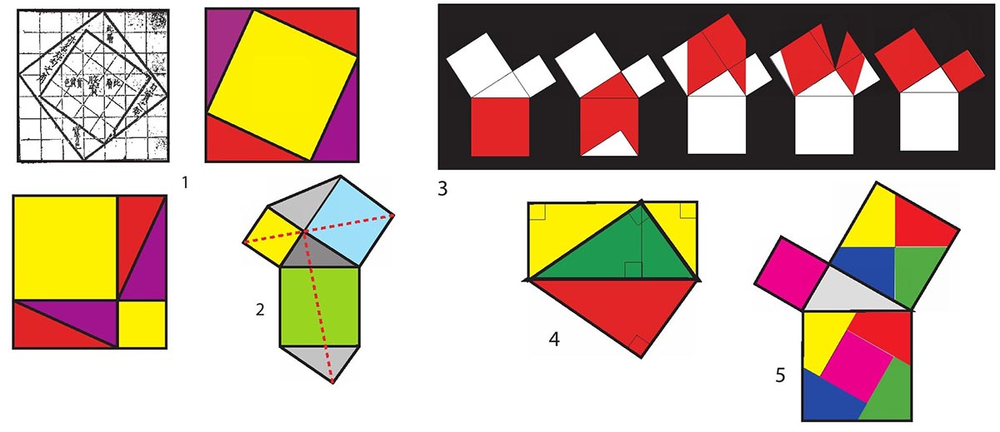
毕达哥拉斯定理是所有数学定理中使用频率最高的定理之一。运用独特的视觉方法去证明毕达哥拉斯定理，能够让我们获得最为直观的洞察力（马丁·加德纳称之为“看一眼就能明白的证据”）。这些证明过程既有教育价值，又兼具数学美感。
下面五幅图呈现的是精选出来的几个著名的证明方法：
1.关于毕达哥拉斯定理的最早论述可以追溯到公元前1900年的一块古巴比伦字板。毕达哥拉斯是第一个提供证明的人，而且是通过剖分法证明的。这与《周髀算经》这本中国的算术书提供的证明方法相似。《周髀算经》一书可以追溯到公元前200年。
2.列奥纳多的证明。
3.巴拉瓦莱的证明——赫尔曼·巴拉瓦莱是一位来自纽约的数学家，他在1945年发表了一个五步的动态证明方法。
4.最简单的证明方法是来自俄亥俄州的19岁少年斯坦利·杰斯姆斯基完成的，后来，伊莱·马奥尔通过折叠包的方法重现了这一证明。
5.佩里加尔的证明——业余天文学家亨利·佩里加尔在1830年以极为优美的方法给出了证明。
你能够只通过观察就理解并且解释这些证明方法吗？
毕达哥拉斯定理谜题
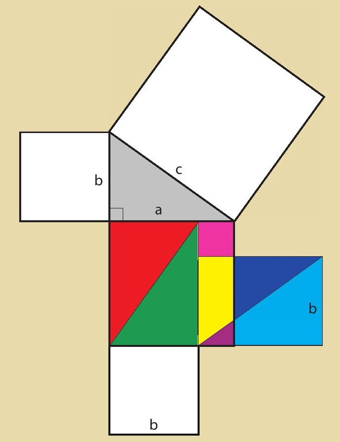
很多关于毕达哥拉斯定理的证明，本身就是谜题。你能运用七色的方块，以直角三角形的斜边为边长，构建一个正方形吗？
动态演示模型
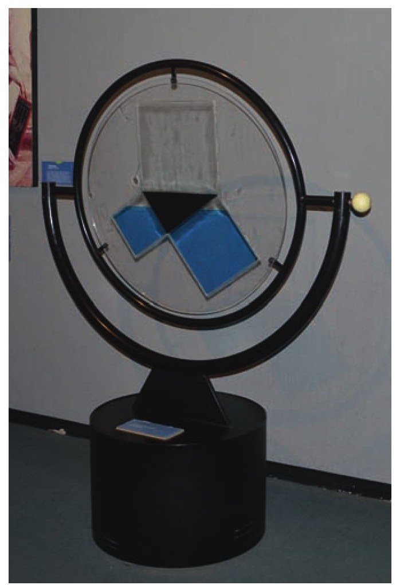
下面的一段内容引自伊莱·马奥尔《毕达哥拉斯定理：一部长达4000年的历史》一书，这本书可以说是关于毕达哥拉斯定理最全面的一部著作。
“到底是什么使毕达哥拉斯定理如此广受关注呢？毋庸置疑，部分原因与多个世纪来人们不断提出的诸多证明方法有关。”伊莱莎·斯科特·卢米斯（1852—1940），一位来自俄亥俄州的特立独行的数学教师，耗尽了一生的心血收集所有已知的证明方法——371条方法，全都写在他那本《毕达哥拉斯命题》里。
卢米斯认为，在中世纪，一名学生要想获得数学硕士学位，就需要提供一个关于毕达哥拉斯定理的全新原创的证明方法。其中一些证明方法是基于三角形的相似性，另一些方法则是基于剖分的，还有一些方法运用代数公式，也有一些人会运用矢量的方法，甚至还有一些“证明”方法（在这里，使用“演示”一词应该更为妥帖一些）是基于一些物理装置。在以色列特拉维夫的一座科学博物馆里，我看到了一个演示装置，带有颜色的液体在以直角三角形斜边为边长所构成的正方形与直角三角形边长构成的正方形之间自由地流动，我们可以看出第一个正方形里的液体等于另外两个正方形的液体容量的总和。（毕达哥拉斯定理的动态演示模型是我发明的。当时是1960年，我在一家科学博物馆担任主管。现在，这些动态演示模型在很多展览上都可以看到，作为数学辅助工具和动力学艺术品。直到今天，在世界各地的许多科学博物馆与科学中心都还可以看到这个动态演示模型。）
普通式
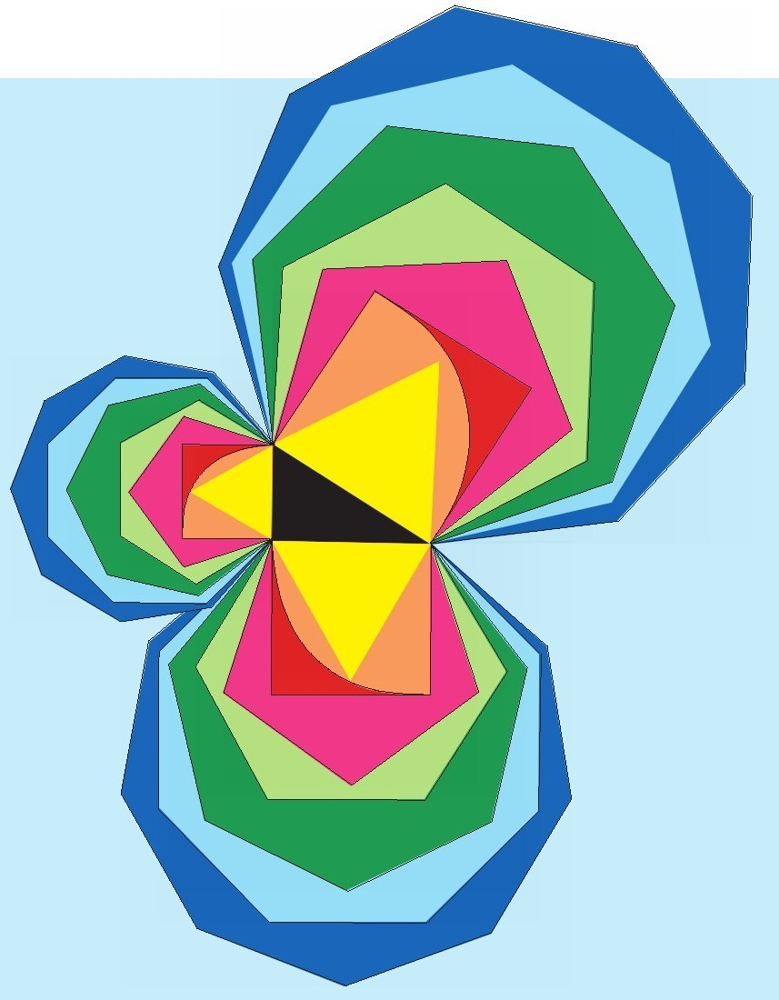
我们都知道，两个以直角三角形两边为边长组成的正方形的面积，等于以这个直角三角形的斜边为边长组成的正方形的面积。
但是，还有一个鲜为人知的事实是，毕达哥拉斯定理之间的关系同样适用于无数其他形状的图形（只要这些图形在几何形状上存在着相似性）。
毕达哥拉斯的好奇心
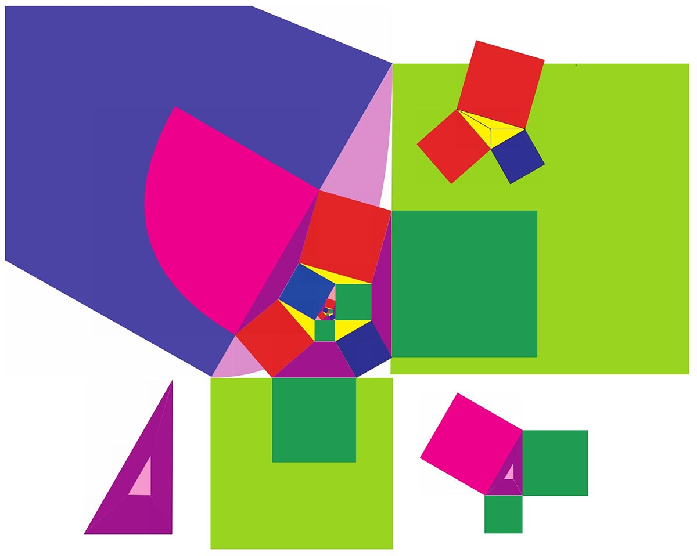
伊莱莎·斯科特·卢米斯教授是一位美国数学家，他写过几本几何学的书，并在多所高中教数学课。也许，他最广为人知的就是他的著作《毕达哥拉斯命题》，这本书对他所处的那个时代所能收集到的317个毕达哥拉斯定理的证明方法都做了一番概略的介绍。他的手稿在1907年就已经完成，最终在1927年出版问世。第二版在1940年出版。美国全国数学教师委员会在1968年重印了这本书，作为“数学教育经典”系列的一部分。
在他的这本书里，卢米斯将基于毕达哥拉斯定理的许多具有美感与独创性的命题都收集起来。他将此称为“毕达哥拉斯的好奇心”，其中包括长度与面积之间的许多有趣的数学关系。举个例子说吧：黄色的三角形与毕达哥拉斯三角形在面积上是相等的，紫色的梯形在面积上是相等的。两个红色正方形的面积等于五个蓝色正方形的面积。卢米斯将毕达哥拉斯好奇心的话题一直延伸到纽约工程师约翰·沃特豪斯身上。
狮身人面像谜题——公元前500年
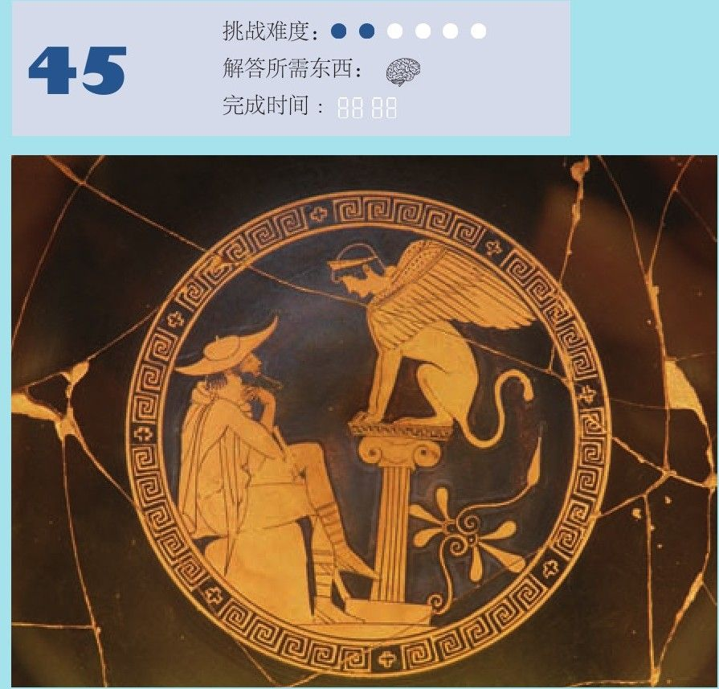
狮身人面像是人类历史上最具神话色彩的建筑群。现存最古老的狮身人面像可以在今天土耳其的哥贝克力遗址（Gobekli）上找到，其历史可以追溯到公元前9500年。在人类历史发展过程中，狮身人面像也会以不同的形态呈现出来。古埃及的狮身人面像结合了人的头部和狮子的躯干，而古希腊的狮身人面像则有着狮子一样的腰部、巨鸟一样的翅膀以及女性的脸庞。
据说，古希腊的狮身人面像守卫着通向希腊城市底比斯的入口，向所有想要进入城门的旅行者提出一个谜题。要是旅行者无法回答出来，那么它就会杀死并吃掉这些人。古希腊著名的英雄俄狄浦斯据说是第一个成功进入城门的人。
你能解答这个谜题吗？谜题是这样的：“哪一种生物早上用四条腿走路，中午用两条腿走路，晚上则用三条腿走路呢？”
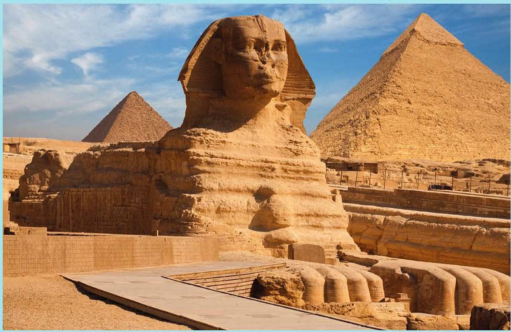
吉萨金字塔的狮身人面像（大约公元前2500年）。吉萨的狮身人面像有着人类的脸庞、狮子的身躯。人们认为它是以法老胡夫为原型的。
形数——公元前500年
对形数进行的数学研究可以追溯到毕达哥拉斯所处的时代，当然，这可能是基于古巴比伦或古埃及的数学先驱们的努力。似乎可以肯定的是，十个物体所形成的第四个三角形数——在古希腊被称为“四列十全”，是毕达哥拉斯思想的一个核心部分。
形数的近代研究可以追溯到费马多边形数定理，之后，它成为数学家欧拉研究的一个重要命题。欧拉在与形数相关的问题上做出过许多发现，其中就包括为符合完全平方数的三角形数构建的清晰的公式。（详见第7章）。
形数在现代趣味数学领域扮演着重要的角色。
古希腊人喜欢将数视为一种由点形成三角形、正方形以及其他多边形的模式，然后在此基础之上探寻其中有意义的联系。如果整数可以通过某些组成几何形状的点来表示，那么它们就能形成被称为“多边形”或“有固定形状”的数群或“数列”。在很多情况下，几何学上关于形数的可视化表现形式都是相当简单并具有美感的，所以，对一个定理阐述的事实或证明，都可以一眼就看明白（这就是所谓的看看就能明白的证明）。
拉斐尔所画的毕达哥拉斯
毕达哥拉斯（公元前570—前495年）向他的门徒演示他的数论以及三角形数，他认为三角形数是“最好的数字”。而好中之好则是右图所示的“四列十全”。
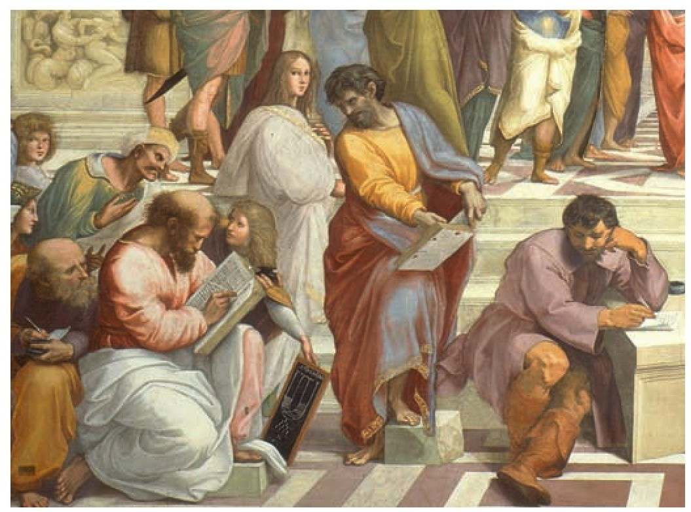
拉斐尔所绘《雅典学派》局部细节；毕达哥拉斯（图左）正在书上记录着什么。
神圣的“四列十全”
第四个三角形数是由十个点组成的，首先出现的连续四个整数之和为10，将它们按照金字塔的方式排列起来，我们就称之为“四列十全”。这是毕达哥拉斯发现的，作为已知宇宙创造的一种象征，它通常被视为毕达哥拉斯学派誓言的神圣基础。
这些点代表着从1到10的数字，每一排都代表着一个维度以及空间的组织形态。
第一排：一个点——零度空间
第二排：连接着两个点的一条线——一维空间
第三排：一个由三角形三个点确定下来的平面——二维空间
第四排：由四个点确定下来的四面体——三维空间
最后一排同样象征着四种元素——土、气、火、水。“四列十全”是一个具有美感的象征，代表着从简单到复杂，从抽象到具体的演化过程。
不考虑镜像与旋转，将10个数放入“四列十全”中，你能想出多少种方法？
图形三角形数——公元前500年
我们可以以三角形的方式堆积一组物体——在两个物体上堆积一个物体，三个物体上面堆积两个物体，依此类推发现三角形数。
比如说，第4个三角形数就是10，如图所示，这是1+2+3+4的和。
三角形数的特别之处，就在于它们是之前任何连续整数相加之和。
在计算下图所示的第10个三角形数时，你可能不会遇到什么问题。但是，要计算出第100个三角形数，你需要花费多长时间呢？年轻的高斯只用了几秒钟就计算出来了。
黄金比例——公元前500年
在一条线上，你该将一个点放在哪个位置，才能使之看上去更加悦目与具有意义呢？在一条线上的众多点中，有一个非常特殊的点，它可以将一条线分割为所谓的“黄金比例”。
这一黄金比例让历史上许多伟大的数学家都为之着迷，其中就包括毕达哥拉斯与欧几里得等大数学家。黄金比例同样让很多艺术家为之着迷，因为美感能够通过一定的比例，或某个区域与另一区域的相对关系来获得。列奥纳多·达·芬奇将这个点称为神圣比例，这绝对不是一种巧合。若是两个长度之间的比例处于黄金比例状态，那么整条线段与较长线段长度之比等于较长线段与较短线段之比。
如图，X：1=（X+1）：X，即
黄金比例之谜A=16.18 B B=12
-0. 618=～Φ2=1+521-5～1.618 andΦ三根长度相同的棍子沿着三个已选定的点分为两个部分，如图所示。哪根棍子是按照黄金比例去分割的呢？A B B=10 A+B A+B_A=?A_B=?
——欧几里得
黄金长方形与黄金三角形——公元前500年
最让人赏心悦目的长方形有着怎样的比例呢？在过去几百年里，绝大多数人，包括一些艺术家和科学家都认同一点，那就是一个长方形的边要符合黄金比例，才能形成一个黄金长方形。若是从审美情趣与优雅的角度去看，黄金长方形在建筑设计、艺术甚至是音乐方面都扮演着重要的角色。如果我们按照古希腊人的方法，利用圆规与直尺去设计，那么黄金长方形所具有的数学美感将会淋漓尽致地展现出来。
1.首先，画出一个完美正方形，然后将底边延长（想要了解更多与完美正方形相关的内容，可以参看第7章的内容）。
2.以底边的中点为圆心，自正方形的左上角画一道弧交于底边的延长线。
3.在交点处画一条垂直线，交于正方形的顶边的延长线，这样，一个黄金长方形就画出来了。
我们可以利用毕达哥拉斯定理去检验长方形的比例是否属于黄金比例。有时，用于这种检验的直角三角形就被称为黄金三角形。在这样的三角形中，其高是其底边的两倍长。这种三角形还有一个有趣的属性：任意三角形都可以由4个与其形状相同的小三角形组成，但只有黄金三角形要由5个与其形状相同的较小三角形组成。
旋转螺线
如果一个长方形两边的长度比例符合黄金比例，那么这个长方形就是“黄金长方形”。
只有黄金长方形具有如下特性：从它上面切下一个正方形时，剩下的长方形依然是原来那个长方形的较小复制品。
鹦鹉螺的横截面上叠加着黄金长方形的旋转对数螺线。
金字塔的高度——米利都的泰勒斯
米利都的泰勒斯（公元前624—前547年）是古希腊著名的工程师、数学家、科学家和哲学家。他生前的著作如今都已经散失了，因此，要想确切地了解他在数学方面所做出的发现是很困难的。甚至我们现在都不能确定他是否写过什么著作，但泰勒斯确是那个时代的杰出人物，被后人称为“几何学之父”。
据说，泰勒斯发现了初等几何的五个定理：一个圆形可以被任何一条直径二等分；等腰三角形的底角是相等的；两条直线相交，对顶角是相等的；两个三角形如果有两个角度数相同且一边长度相等，那么这两个三角形全等；在一个半圆里构成的三角形，必然是直角三角形。
据说，在公元前585年，泰勒斯成功预测了一次日食。
月食的周期大约是19年，这在当时已经被确定下来了。不过，在那个时代，对日食周期的计算则要困难得多，因为日食在地球上的不同地方都可以看到。泰勒斯在公元前585年对日食的预测，很可能是一次有根据的推测——他相信日食大概就在那个时刻出现。
关于泰勒斯如何测量金字塔高度，一直存在着多种说法。他发现，当人的身高与阴影长度相同的时候，去测量金字塔阴影的长度，就可以得出金字塔的高度。
直到今天，很多科学家依然对古希腊的一些发现充满疑惑。许多我们今天觉得理所当然的知识都要归功于古希腊与古罗马人的发现与创造。
当泰勒斯给出这些问题的答案时，我们会觉得它非常奇妙。当很多人在炎炎烈日下只看到金字塔与阴影的时候，泰勒斯却能够透过现象看本质。泰勒斯观察到了抽象的直角三角形以及更多的内容。他能够看到事物运转的模式！他真是一个天才！
相似三角形
根据普鲁塔克的说法，泰勒斯的研究让我们对相似三角形有了深入的了解。

截线定理与相似性存在着紧密的联系。事实上，这等同于相似三角形的概念。将两个相似三角形（角相同，边长不同）中的一个三角形放入另一个三角形中，就会产生截线定理的一种布局结构；反之，截线定理结构中也总是包含两个相似三角形。
虚伪与诚实的悖论
我们对悖论的定义是“任何一个人、一件事或一种状况展现出了一种明显相互矛盾的属性”。一开始，因为缺乏相关的知识，某些事物看起来似乎是悖论；我们的认知水平提高后，这些所谓的悖论就不存在了。然而，真正的悖论不会迎刃而解，甚至根本无法解决。一般来说，悖论这个名词可以描述一些单纯让人感到惊讶或是违反直觉的事情（比如，第7章提到的生日悖论）。
W. V.蒯因于1962年阐述了三种一般类型的悖论：
1.真实悖论——这样的悖论一开始看上去是荒谬的，但之后却被证明是正确的。
2.虚假悖论——这样的悖论不仅看上去是荒谬的，而且也的确是荒谬的。因为它假定的前提条件就存在着谬误。
3.既不是真实悖论也不是虚假悖论的悖论，可能就代表着一种自相矛盾。在这种情况下，即使以恰当的方式进行一些合理的推论，也会得到一个自相矛盾的结果。
——爱因斯坦
芝诺的悖论——公元前400年
著名数学家芝诺，生于公元前490年的意大利。他一生创造出了40多个悖论，来为他的老师巴门尼德所提倡的一元论哲学进行辩护。这种一元论的哲学思想认为：现实是不会发生变化的，改变（运动）是不可能出现的。他创造出的许多让人困惑的悖论，在那个时代似乎都是不可能被解答的。
芝诺最为著名的一个悖论就是阿喀琉斯与乌龟之间的赛跑悖论。阿喀琉斯让乌龟率先起跑。芝诺的想法是这样的：当阿喀琉斯到达了乌龟出发的A点时，乌龟已经爬到了B点。现在，阿喀硫斯为了赶上乌龟，必须跑到B点。但是，在阿喀琉斯跑到B点的这段时间里，乌龟已经爬到了C点，依此类推。芝诺的结论是，阿喀琉斯要花费无穷的时间才能追赶上乌龟。阿喀琉斯会离乌龟越来越近，却始终不能真正赶上它。他所跑的行程可以被划分为无数个部分。
在一个可移动的物体能够走完某段路程之前，它必须要首先经过这段路程中间点所处的位置。在它能够走到中间点的位置之前，必须要先走到路程四分之一处的位置，依此类推。一开始设定的距离没有被走过，因此运动是不可能的。
当然，我们不要忘了，这样的赛跑只存在于芝诺的脑海中。这种说法是荒谬的，但却符合逻辑。你可以试着从逻辑的角度加以反驳，很多人都已经尝试过了。
显然，我们知道运动的状态是可能存在的。那么芝诺的逻辑又有什么问题呢？你能从芝诺的推理中找到错误的逻辑吗？
芝诺悖论有助于收敛无穷级数思想的产生，从而衍生出许多数学概念。其中主要的一个就是关于极限的概念。在文艺复兴时代，人们研究悖论的兴趣再次被激发，当时有超过500个悖论被收集起来进行出版。
芝诺悖论是“归谬法”的第一个例证，同时也被称为自相矛盾的证明方法。
奇怪的是，直到现在，还有许多人认为，关于芝诺悖论，我们还没有找到令人满意的解释。
柏拉图立体与凸正多面体——公元前400年
正多面体，又称为柏拉图立体或多面体，是由多个面积相同的凸多边形组成的多面体。古希腊的学者对柏拉图立体进行了深入的研究，其中一些资料将这些研究归功于毕达哥拉斯。然而有证据表明，毕达哥拉斯可能只是通晓四面体、立方体以及十二面体，而八面体、二十面体的发现则归功于特埃特图斯（公元前417—前369年）。特埃特图斯与柏拉图处在同一个时代，他对上面提到的五种多面体都进行过数学描述，并且可能最早证明了不存在其他凸正多面体。
这些立体被称为柏拉图立体是因为它们与柏拉图的哲学有着密切的联系。柏拉图在公元前360年的《蒂迈欧篇》里提到了这样的立体，他将四种经典元素（土、气、水、火）与正多面体联系在一起。土对应立方体，气对应八面体，水对应二十面体，火对应四面体。第五个柏拉图立体是十二面体，他对其进行了较为深奥的描述：“上帝用它来安排天空中星座的位置。”柏拉图还提到了古希腊数学家特埃特图斯的研究成果——他证明了只存在五种凸正多面体。
欧几里得在《几何原本》一书中对柏拉图立体进行了完整的数学描述，并且在命题18中证明除了这五种凸正多面体外，再也找不到其他的凸正多面体了。
为正多面体着色
如图所示，你可以看到五个正多面体的施莱格尔图。你至少需要用多少种颜色才能使这些柏拉图立体的每一个相邻面都是不同的颜色呢？
正多面体的图表
所有经典的多面体都能满足欧拉公式：F-E+V=2，其中F=面，E=边，V=顶点。
你能填写上方的正多面体表格来进行验证吗？
正多面体——只有五个！
要想在一个多面体里形成一个立体角，至少需要三个正多边形。三个、四个和五个等边三角形都能够形成立体角。六个等边三角形会形成一个平面。三个正方形会形成一个立体角。而四个正方形又会形成一个平面。
三个正五边形可以形成一个立体角，再多就不行了。
三个正六边形会形成一个平面，这就到极限了——边数更多的正多边形不可能像正六边形那样，三个聚集在一点上。因此，既然只有五个立体角可以通过全等的正多边形构成，那么最多也只能有五种正多面体存在。
古希腊人认识到，这个世界上只存在五种柏拉图立体。其中最为核心的观点就是，多边形的内角会在这个多面体的一个顶点上汇聚，并且加起来的角度小于360°。
等边三角形的每个内角都是60°，这意味着对一个正多面体而言，只有三个、四个或五个三角形能够在一个顶点上汇聚。如果是六个三角形汇聚在一个顶点，那么它们的内角和至少是360°，这是不可能做到的。因此，请大家认真思考下面的各种可能性：
三角形：三个三角形在一个顶点上汇聚，可以形成一个四面体。
四个三角形在一个顶点上汇聚，能够形成一个八面体。
五个三角形在一个顶点上汇聚，可以形成一个二十面体。
正方形：正方形的每个内角都是90°，因此三个以上的正方形不可能汇聚在一点。只有三个正方形才能做到，这样可以形成一个六面体或者立方体。
五边形：唯一的可能性就是，三个五边形汇聚在一点上，这就形成了一个十二面体。
六边形或边数超过六的正多边形是不可能形成一个正多面体的表面的，因为它们的每个内角都不小于120°。
欧几里得的《几何原本》可能是历史上最受欢迎的图书之一，2000多年来一直吸引着世界各地的人们。然而到了现代，人们对这本书似乎不再那么关注了，即便对数学家而言也是如此。这是个令人遗憾的事实，因为直到今天，《几何原本》依然是人们理解数学证明的定义，乃至数学本身的最佳途径之一。
《几何原本》一书提出的重要论断就是，世界上只存在五种类型的正多面体。这个观点的微妙之处着实让人充满研究的兴趣。
“除了上面提到的五种类型的图形，没有其他正多边形可以构成正多面体了。”
《几何原本》——公元前300年
欧几里得所著的《几何原本》被认为是科学与数学领域最具影响力的著作，主要是由于它为几何学以及其他数学分支的发展提供了逻辑思想。但是，在此之前，从未有一本著作能够像这本书一样，用如此严谨的方式去对待数学，使之变成一门精密科学。
这本书被称为人类有史以来最成功与最具影响力的数学著作，它对科学领域的各个分支都产生了影响，其中对数学及精密科学的影响尤为深远。该书于1482年首次在威尼斯出版。这是印刷术出现后最早印刷出版的数学著作。
俄克喜林库斯莎草纸
如图所示，你可以看到在一张俄克喜林库斯莎草纸上记载着欧几里得《几何原本》一书的碎片，这份莎草纸现存于美国宾夕法尼亚大学，它是考古学家于19世纪末20世纪初在埃及俄克喜林库斯附近的一处垃圾场发现的。这份手稿的年代可以追溯到1～6世纪，包含了数千份希腊文和拉丁文文件、信件及文学作品。
上面的图表出自《几何原本》II中的第五个命题。现代术语中，它可以被解释为一种代数恒等式的几何构想。在这种情况下，可以用如下式子表示：ab+（a-b）2/4=（a+b）2/4（虽然欧几里得命题与代数之间的关系存在着一定的争议。）
右上方的三个图可以帮助你理解这个命题的推导过程。
如果一条直线被截为相等和不相等的部分，那么不相等部分所包含的长方形加上直线截点间所形成的正方形的总面积，就等于整个线上的正方形面积的一半。
欧几里得（公元前325—前270年）
来自亚历山大港的欧几里得是一位古希腊数学家，通常被后人称为“几何之父”。在《几何原本》一书中，他对我们现在称之为欧几里得几何的原理进行了归纳推理。欧几里得在透视、圆锥曲线、球面几何学、数论与精确计算等方面都有过研究与阐述。关于欧几里得的生活，人们知之甚少，只有为数不多的资料谈到他的生平。有关欧几里得的历史资料几乎都是在他去世几百年之后，才由来自亚历山大港的普罗克洛斯与帕普斯撰写。
亚里士多德的轮子悖论——公元前300年
亚里士多德的轮子悖论出自古希腊的著作《机械》（Mechanica）——通常，人们认为此书的作者是亚里士多德。
有两个轮子，其中一个轮子在另一个轮子中间，它们有着不同的直径。它们底边上某点所走过的路径都是直线，乍一看，这两条直线似乎等于两轮的周长。
但是，这两条直线有着相同的长度，因此两个轮子的周长必定相同，这与我们之前所提到的这两个轮子有着不同的直径是相矛盾的：这就是所谓的亚里士多德悖论。
这个悖论存在的漏洞就在于，假定小一点的轮子的行进轨迹为其周长。事实上，对两个轮子来说，要想做出完全相同的运动是不可能的。小一点的轮子并没有如图所示从点3转动到点4，而是被大轮子拽着沿着这条直线前进。从物理学的角度来看，如果两个半径不同的同心轮子沿着一条平行线转动，那么其中至少会有一个打滑。如果利用齿轮系统防止打滑，那么轮子就会出现被卡住的情况。在当代类似的实验中，这种情况通常会在司机将汽车停在路边时无意中发生。实验发现，尽管轮毂盖不断转动并发出刺耳的声音，但汽车外胎并没有出现打滑的情况。
拉斐尔所绘《雅典学派》中的柏拉图（左）与亚里士多德（右）
从数学的角度看，内圆的点的数量与外圆的点的数量是完全一样的，即这两个圆之间存在着一种双射的情况（一一对应的关系）。这并不能运用到轮子实体上，因为它们是由离散的原子组成的。因此，在车轮的密度、宽度与厚度等都相同的情况下（不同的只是它们之间的半径），较大车轮的原子数量肯定要更多一些。
亚里士多德（公元前384—前322年）
作为柏拉图的学生、亚历山大大帝的老师，亚里士多德是当时最有影响力的思想家之一。他的著作范围甚广，其中包括哲学、伦理学、数学、逻辑学、物理学、生物学、诗歌、戏剧、音乐、修辞学与语言学。亚里士多德与柏拉图以及苏格拉底（柏拉图的老师）的作品共同构建了西方哲学的完整体系——道德、美学、逻辑学、科学、政治学和形而上学都被囊括在这一宏大的哲学体系中。
十二面体方向
谜题1——在一张桌子上，你能用多少种不同的方法去放置一个着色的十二面体，使之每次都占据相同的空间？
谜题2——上图从各个方向展示了一个十二面体，你能填补缺失的颜色吗？
谜题3——对一个十二面体进行平面切割，会得出什么样的横截面呢？
冠夏克定理
从外面的大正方形向内画四个等边三角形。将这四个等边三角形的顶点连接起来，就得到了一个内部的正方形。从这个正方形的中点出发，与这些三角形的每条边相连时，就会形成一个正十二边形。
这个内部正方形就被称为冠夏克瓷砖，可以用来证明冠夏克定理：在一个单位半径的圆里内切的正十二边形，其面积为三个平方单位。通过认真观察冠夏克瓷砖，你能否发现这个十二边形的面积与冠夏克瓷砖的面积的关系？
J.冠夏克（1864—1933），匈牙利人，为计算正十二边形的面积提供了一种优雅的几何方法。
十二面体的宇宙
让-皮埃尔・卢米涅在《自然》杂志的文章中写道，“宇宙学标准模型预示着宇宙是无限且扁平的”。然而，法国与美国的宇宙学家现在则认为，宇宙可能是有限的，而且形状与一个十二面体相似。他们认为，这种十二面体的形状能够对宇宙微波背景辐射——宇宙大爆炸之后遗留的放射物——的发现进行充分的解释，普通的形状则无法容纳这样的空间。
古老的化圆为方问题
古希腊最著名的三个经典问题之一，就是画出一个与已知圆面积完全相同的正方形（化圆为方），其限制条件是只能使用圆规和直尺。
1882年，林德曼·魏尔施特拉斯定理就成功地解答了这个问题，该定理认为，π是一个超越数（而不是一个代数无理数，也就是说，它不是任何有理系数多项式的根），因此求与已知圆面积相等的正方形是不可能的。我们只能找到一个近似的解答方法，而这样的方法在古巴比伦时代已经被数学家们找到了。公元前1800年古埃及著名的莱因德纸草书中给出了圆面积公式：（64/81）d 2，其中d是圆的直径。
希波克拉底月牙问题
你能够根据右边蓝色等腰三角形的面积，计算出红色月牙的面积吗？
你能够根据两个蓝色等腰直角三角形的总面积，计算出两个红色月牙的面积吗？记住，毕达哥拉斯定理可以帮到你！
你能够根据蓝色正方形的面积，计算出四个红色月牙的总面积吗？
你能够根据蓝色直角三角形的面积，计算出两个红色月牙的总面积吗？
人类对化圆为方问题的早期尝试
来自希俄斯的希波克拉底（公元前470—前410年），虽然在化圆为方这个问题上没有取得成功，但却在这个过程中获得了意外发现，成功地解答了圆弧内图形的问题。在那个时代，这是一项了不起的成就。他是第一个计算出月牙图形的面积（被圆弧包围的面积）与直线图形的面积相等的人。希波克拉底的著作已经失传了，但他必然是按照与下文中类似的方法去解答的。根据毕达哥拉斯定理，我们将其推演成一种广义形态——毕达哥拉斯定理适用于摆放在一个直角三角形三条边上的任何一系列相似图形。前提是这些图形要摆在相应的方位上。毕达哥拉斯定理对于圆形也同样适用。直到今天，希波克拉底的发现仍能唤醒很多数学家无限的热情与盲目的希望，以求找到化圆为方的方法。
希波克拉底的六边形定理
希波克拉底宣称，他找到了化圆为方的方法。在他成功地找到了与月牙面积相等的正方形之后，就尝试在六边形上实验。他首先从一个直径为AB的圆出发，接着以两倍AB的长度为直径画一个更大的圆。这个大圆里有一个内接正六边形，这个正六边形的每条边都与圆的半径相等。请注意，正六边形的每条边也与一开始提到的小圆直径AB相等。如图所示，以六边形的每条边为直径画出六个半圆。你能计算出六个月牙（红色区域）的总面积吗？
化圆为方问题所带来的快乐
古今数学家面临的一个重要挑战，就是解答化圆为方这个问题。
数学家们都未能解答这个问题。在进行测量的时候，圆弧与直线总是会留下一些没有计算在内的部分。
第一位想要尝试解答这个问题的数学家是公元前5世纪的阿那克萨哥拉。他在狱中时这样写道：“没有任何地方能夺走一个人的快乐，或者夺走他的美德与智慧。”
圆与正方形的面积——公元前400年
如图所示，上面的演示模型以物理形态呈现。把模型倒置过来，让有色液体从一个部分流到另一个部分，从而证明了圆面积公式和数字π的正确性。这个模型是我在20世纪60年代发明的。
希波克拉底（公元前470—前410年）
希波克拉底，雅典的一位几何老师，他是第一位构建出与圆面积相等的正方形的人。
是否可以只运用直尺和圆规作与已知圆面积相等的正方形这个问题，在1880年有了最终的解答。林德曼证明了π是一个超越数（也就是说，这个数不是任何有理系数多项式的根），从而证明了人类根本不可能仅通过直尺和圆规去作一个与已知圆面积相等的正方形。
尽管如此，数学界对这个问题的兴趣依然不减。新的挑战变成了对最接近已知圆面积的正方形的研究，前提也是只使用直尺和圆规。面对这种挑战，我们需要回到阿基米德所处的时代。
阿基米德以一个圆的半径r作为一个正方形的边，正方形面积为r 2，那么这个圆形的面积就是“r 2”乘以π，从而得出了圆的面积公式“πr 2”。
关于圆面积公式的正确性可以通过本人原创的液体演示模型得到视觉上的证明。密闭的有色液体刚好能够填满半径为r的圆。当这个模型倒置的时候，那么液体就会流进正方形的部分，所占面积为31/7×r 2。
请注意：扁平封闭容器的厚度全部是一样的。
1914年，拉马努金用尺规作图创造出了一个只在小数点后面第9位与π不同的数。对一个直径长达12000千米的圆形来说，正方形边长的误差会小于2.5厘米。
螺线
据现有历史文献记载，对螺线的研究可以追溯到古希腊时代。阿基米德螺线就是最为典型的例子。笛卡儿在1638年研究动力学的时候，发现了对数螺线，也叫等角螺线。这种螺线的特殊之处就在于，它会以一个固定的角度切割所有矢径。从中点O出发的任意一条线与等角螺线相交的角（这条线与从切点P所做切线之间的夹角）永远相等。因此，这样的曲线具有自我复制的属性。
雅各布·伯努利（1654—1705）对等角螺线非常着迷。他甚至要求在他死后的墓碑上刻下这样一句话：“纵使改变，依然故我。”
这种螺线的“神奇”属性可以通过黄金分割以及斐波那契数得到增强，从而使它们成为具有神秘色彩的迷人物体。
特奥多鲁斯螺线——公元前400年
特奥多鲁斯（公元前465—前398年）螺线又被称为平方根螺线、爱因斯坦螺线或毕达哥拉斯螺线，如图所示，是一条由连续的直角组成的螺线。
螺线始于一个等腰直角三角形，腰长为一个单位。
第一个直角三角形的斜边长度是2，这也是第二个直角三角形一边的长度，而另一边的长度则为1；则第二个三角形的斜边为3，依此类推，第n个三角形的边长就是n与1了，那么它的斜边长度就是n+1。
虽然特奥多鲁斯的所有著作都已不存在了，幸运的是，学生柏拉图将他的导师特奥多鲁斯写入对话集《特埃特图斯》里，向世人讲述了他所取得的成就。后人认为，特奥多鲁斯螺线已经证明了一点，即3到17之间的所有非平方整数的平方根都是无理数。根据柏拉图的说法，特埃特图斯曾对苏格拉底说过下面这段话：
“这有关于平方根的属性。特奥多鲁斯向我们描述并展示了，第3个根与第5个根都可以用正方形的边长去替代，但它们却没有公约数。他一直推算到第17个。”
柏拉图对特奥多鲁斯为什么在计算17的平方根的时候停下来的做法却没有做出解释。人们一般认为，直角三角形斜边的长度为17时，是能让图形不相互重叠的最大极限了。
1958年，E.托伊费尔证明，无论一个螺线延伸距离有多远，任何两条斜边都不会重合。此外，如果将长度为1的边延伸为一条直线，那么它们不会穿过整个图形的任何一个顶点。
圆锥曲线——公元前350年
圆锥曲线是用一个平面切割对顶锥而得到的曲线。
古希腊时代的数学家就已经对此进行了一番研究，因为它们具有一定的审美属性。椭圆、双曲线与抛物线都让欧几里得以及同时代的其他几何学家为之着迷。在那个时代，他们无法找到这些形状所具有的特殊用途，因此把这些形状看作具有美感的几何消遣。
数学家们都会有这样一个习惯，那就是单纯为了追求乐趣，而去研究一些毫无意义的物体。但是，这些研究通常都会给几百年后的科学家带来巨大的影响。对于圆锥曲线的研究正是如此。约翰尼斯·开普勒与艾萨克·牛顿就是依靠前人对圆锥曲线的研究成果，描述出了天体在太空中运转的路径：行星、彗星甚至整个银河系都是沿椭圆形、双曲线或是抛物线等路径运转的。
米奈克穆斯（公元前380—前320年）
米奈克穆斯是古希腊数学家和几何学家，也是柏拉图的好朋友。米奈克穆斯被认为在研究倍立方问题的过程中发现了圆锥曲线。倍立方问题是用尺规作图无法解决的三大著名几何难题之一，古埃及、古印度与古希腊的许多学者都曾对这个问题充满兴趣。
公元前200年左右，阿波罗尼奥斯对这些曲线进行了较为系统的研究。他的八卷著作对圆锥曲线进行了深入的总结，极大地拓宽了那个时代人们的知识视野。
一条圆锥曲线是指一个平面与一个圆锥体相交形成的曲线。从解析几何学来看，一个圆锥曲线可以被视为一种平面代数曲线。
共有三种类型的圆锥曲线：双曲线、抛物线与椭圆。圆是椭圆的一种特殊形态，所以，数学家们有时也会将圆称为第四种圆锥曲线。
算盘——公元前300年
算盘是古代一种极具独创性的计算工具，同样适合十进制计算系统。
我们可以将数字用于统计单个物体或记录计算结果，把二者的区别弄清楚，是培养数学能力的重要一步。
我们很难想象在没有数字的情况下去进行计数，但在历史的某个阶段，成文的数字是并不存在的。当人类走过了完全依赖统计木棍的时代之后，就学会了用刻痕来代表数字。后来，人类开始学会用鹅卵石或贝壳等东西去计算。早期的计数板产生之后，人类又发明了一种兼具美感与独创性的机械装置——算盘，旨在提高数值运算的效率。
算盘的演变历史可以说经历了这几种鲜明的形态：
1.泥土写字板——最早期的形态。
2.计算盘——有着松散算珠的装置——又被称为萨拉米斯算盘。
3.现代的算盘——框架中每一排算珠都固定完好。当代算盘的最好例子就是俄罗斯算盘（有11根线，其中10根串着10个算珠，另一根则串着4个算珠）和中国算盘（算盘上面部分每根线都有2个算珠，下面部分则有5个算珠）。当代的算盘除了作为计算工具使用外，还是十进制运算的一个数学模型。在数字0的概念产生之前的很长一段时间里，算盘一直用空列进行计算。
格雷戈尔·赖施的算术
1503年，德国哲学家格雷戈尔·赖施（Gregor Reisch）出版了一本哲学著作，让波伊提乌（Boethius）与毕达哥拉斯运用数学的象征性符号来进行一场比赛。其中，毕达哥拉斯用的是一个算盘，而赛维努斯·波伊提乌使用的则是数字。只观察这幅图，你能知道算盘是怎样使用的吗？